Introduction
P4
Welcome & Course Information
- Instructor: \( \quad \quad \quad \)Libin Liu (http://libliu.info)
- Website: \( \quad \quad \quad \) https://games-105.github.io/
- Lecture: \( \quad \quad\quad \) Monday 8:00PM to 9:00PM (12 Weeks)
- Prerequisites: \( \quad \) linear algebra, calculus,
\( \quad \quad \quad \quad\quad \quad\) programming skills (python),
\( \quad \quad \quad \quad\quad \quad\) probability theory, mechanics, ML, RL… - Exercise:
- Codebase: \( \quad \)https://github.com/GAMES-105/GAMES-105
- Submission: \( \quad \)http://cn.ces-alpha.org/course/register/GAMES-105-Animation-2022/
- Register code: \( \quad \)GAMES-FCA-2022
- BBS: \( \quad \quad \quad \quad \quad\)https://github.com/GAMES-105/GAMES-105/discussions
- QQ Group: \( \quad \quad \quad\)533469817
P7
3D Computer Graphics
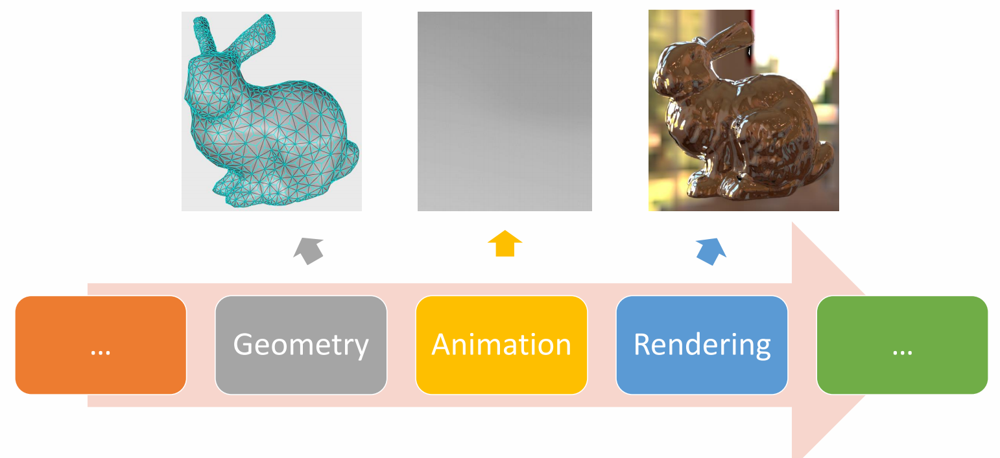
P10
3D Computer Animation
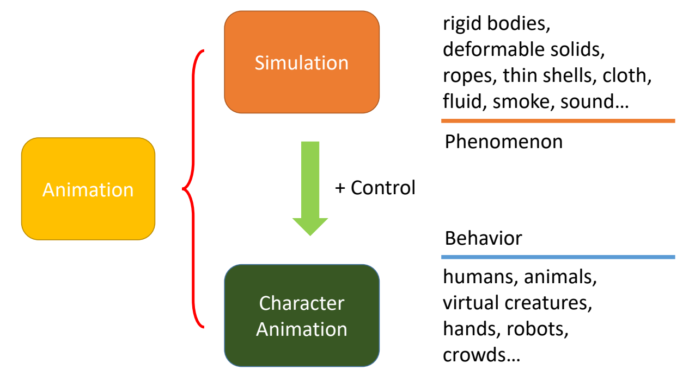
✅ 仿真，用于描述客观事物，它们的运动规律可以用精确的数来描述。GAMES103
✅ 动画，用于描述有主观意志的事物，使用统计的方式来对它们的行为建模(例如AI建模)。 GAMES105
P11
Why Do We Study Character Animation
- A character typically has 20+ joints, or 50-100+ parameters
- It is not super high-dimensional, so most animation can be created manually, by posing the character at keyframes
- Labor-intensive, not for interactive applications
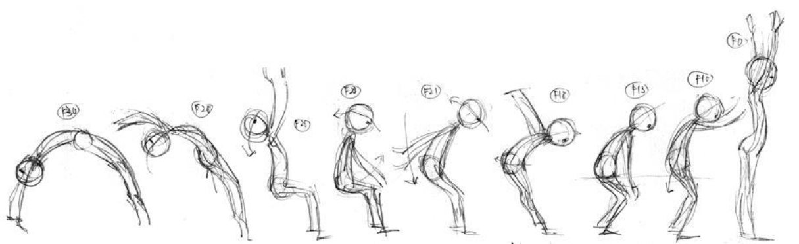
- Character animation techniques
- Understanding the mechanism behind motions and behaviors
- Smart editing of animation/ Reuse animation / Generate new animation
- “Compute-intensive”
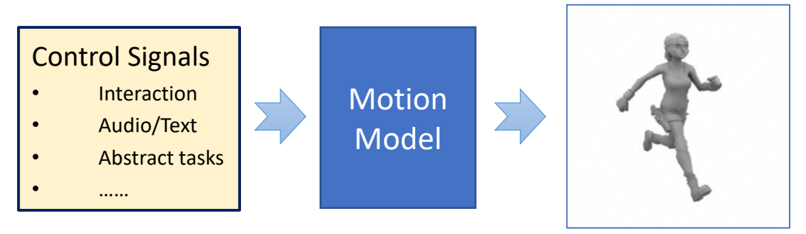
✅ 计算机角色动画把原本劳动密集型的动画师工作变成计算密集型的工作。
P13
Character Animation Pipeline
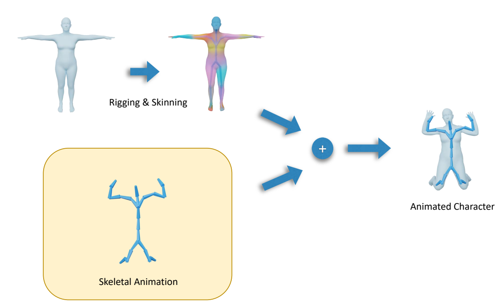
P15
Where does a Motion Come From
根据是否使用物理，把角色动画分为两大类。
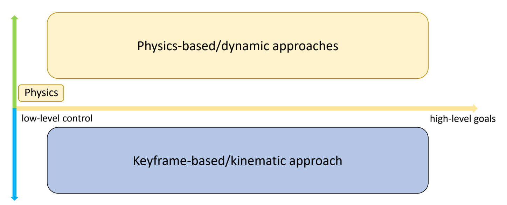
P16
Keyframe-based/Kinematic Approaches
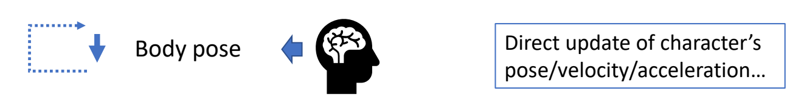
✅ 基于运动学直接更新角色状态，运动可以不符合物理规律。
P18
Physics-based/Dynamic Approaches
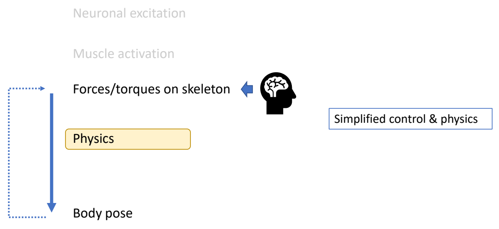
✅ 基于物理，但实际情况会有简化，不能直接干预角色姿态。
P19
Control Level
根据控制方式的高度，可以分为Low Level和Heigh Level
P20
low-level control
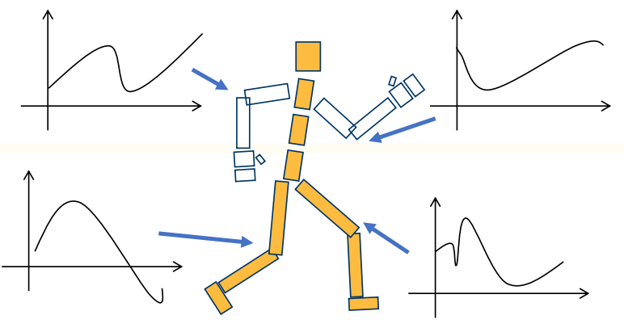
✅ 对每一帧每一个姿态进行精确控制每个细节。
✅ 优点：精确控制；缺点：低效。
P21
high-level control
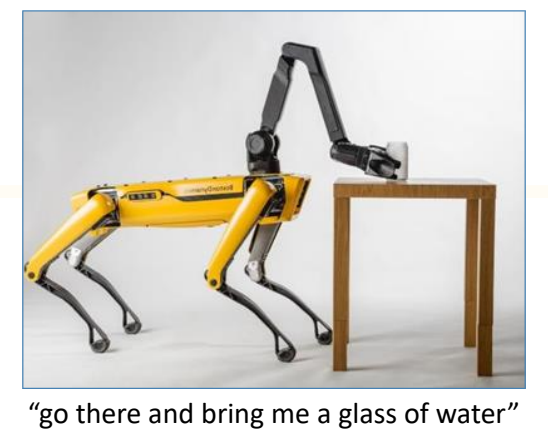
✅ 控制高级目标。
Keyframe-based/Kinematic Approaches
P24
Disney’s 12 Principles of Animation
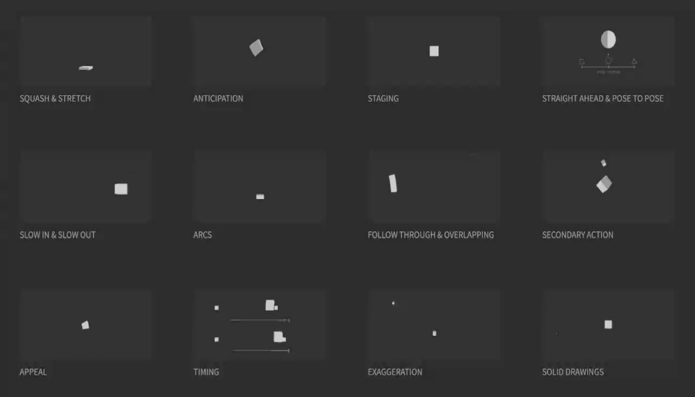
[http://the12principles.tumblr.com/]
✅ 在动画师总结的准则里隐藏了物理规则和艺术夸张
Keyframe Animation
✅ 这是一种非常low level的控制方法，可以保证所有细节，但非常慢
P26
Forward Kinematics
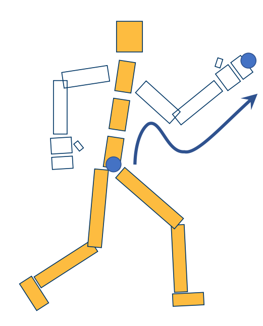
Given rotations of every joints
Compute position of end-effectors
P27
Inverse Kinematics
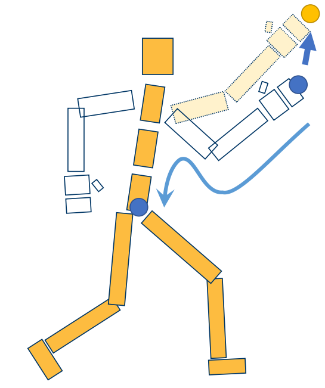
Given position of end-effectors
Compute rotations of every joints
P28
Interpolation
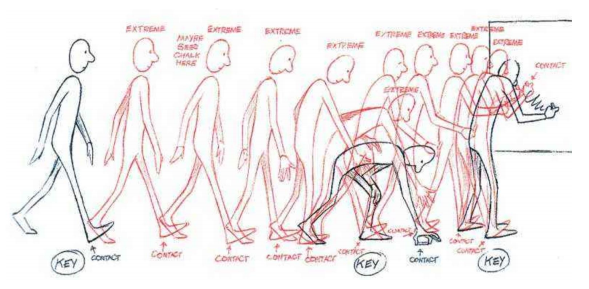
Motion Capture
动捕设备、视频动捕，把动捕角色应用到角色身上，需要经过重定向
动作捕捉和重放，不能产生新的数据
✅ 光学动捕、视频动捕、穿戴传感器动捕。
P34
Motion Retargeting
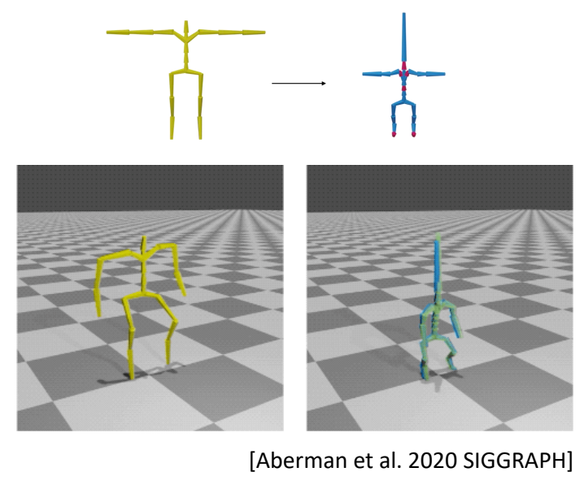
Given motions of a source character
Compute motions for target characters with
- different skeleton sizes
- different number of bones
- different topologies
- ……
P36
Motion Graphs / State Machines
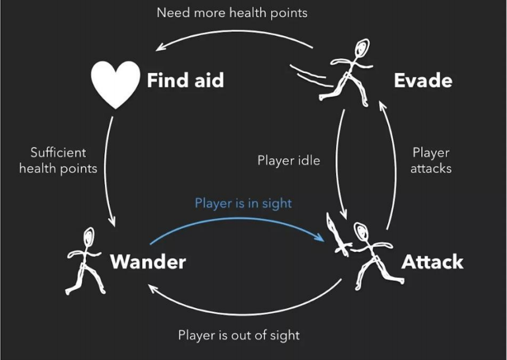
✅ 把捕出来的动作进行分解和重组，生成新的动作。
P37
Motion Graphs
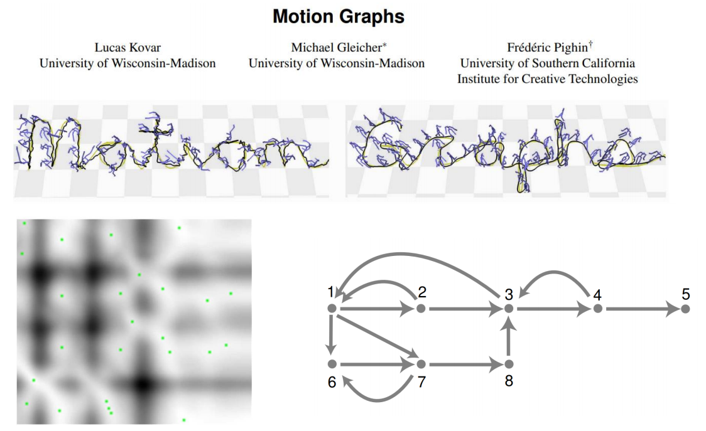
✅ 给一段任意的动作，寻找能够构建状态机切换的位。
P38
Motion Graphs的改进 - Interactively Controlled Boxing
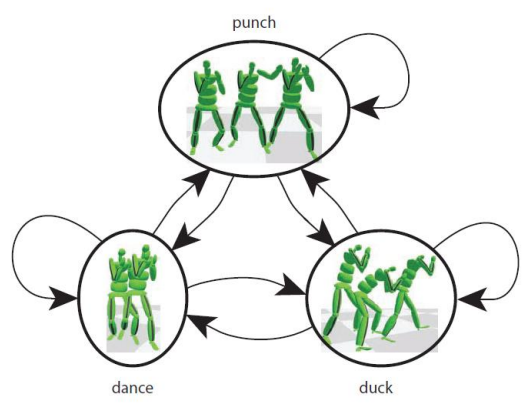
[Heck and Gleicher 2007, Parametric Motion Graphs]
✅ 对Motion Graph的改进，比如一个节点中有很多动作，对这些动作进行插值，来实现精确控制。
P39
Motion Graphs的高级应用
Character Animation in Two-Player Adversarial Games
KEVIN WAMPLER,ERIK ANDERSEN, EVAN HERBST, YONGJOON LEE, and ZORAN POPOVIC Univoersity of Washington
Near-optimal Character Animation with Continuous Control
Adrien Treuille \(\quad\) Yongjoon Lee \(\quad\) Zoran Popovic
University of Washington
✅ Motion Graph＋AI，实现高级控制
✅ 例如：AI使用Motion Graph，通过选择合适的边，进行执行，完成高级语义。
P42
Complex Motion Graphs
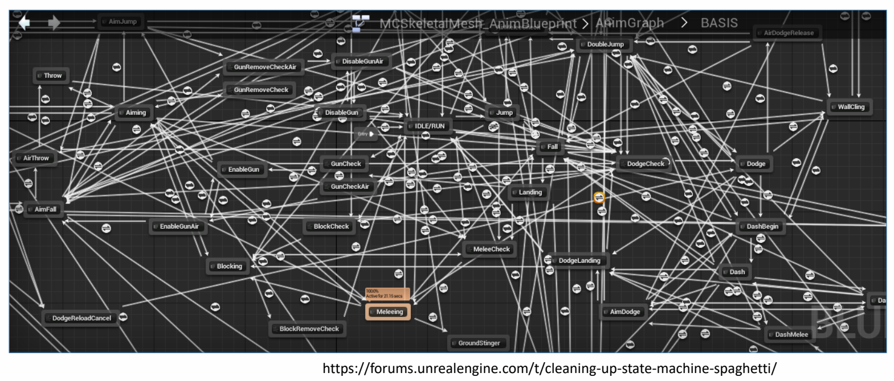
✅ 动作图非常复杂，容易出BUG．
P43
Motion Mathing
✅ 改进，Motion Graph的动作都是完整的片断，可以把动作再分细一点，切到每一帧。
✅ 不是完整地播放一段动作，而是每一帧结束后，通过最近邻搜索找到一个新的姿态，
✅ 满足：（1）接近控制目标（2）动作连续
✅ 关键：（1）定义距离函数（2）设计动作库
P45
Learning-based Approaches
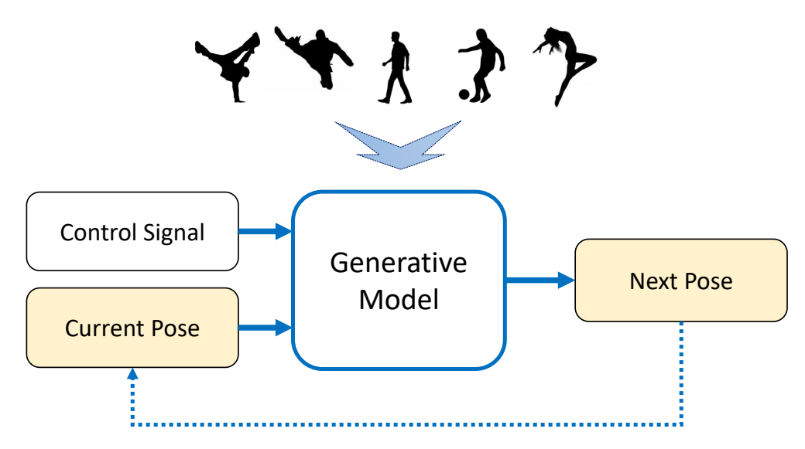
✅ 对角色动作的内在规律去理解和建模，从数据学习统计规律。
✅ 生成模型：只需要采足够的动作去给模型就能生成新的动作。
✅ 不需要手工作切分、生成状态机
| ID | Year | Name | Note | Tags | Link |
|---|---|---|---|---|---|
| 2020 | Local Motion Phases for Learning Multi-Contact Character Movements | ||||
| 2021 | Character Controllers Using Motion VAEs |
P49
Cross-Modal Motion Synthesis
- Audio-driven animation
- Music to dance
- Co-speech gesture
- ……
- Natural language to animation
- Descriptions to actions
- Scripts to performance
- ……
| ID | Year | Name | Note | Tags | Link |
|---|---|---|---|---|---|
| 2022 | Rhythmic Gesticulator | ✅ 语言和动作都有内存的统计规律，把两种统计模型之间建关系，实现跨模态生成。 | 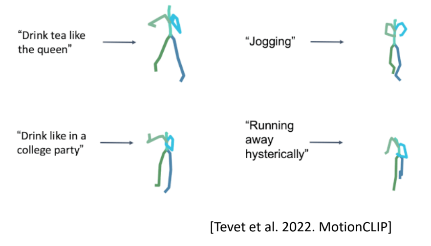 |
总结
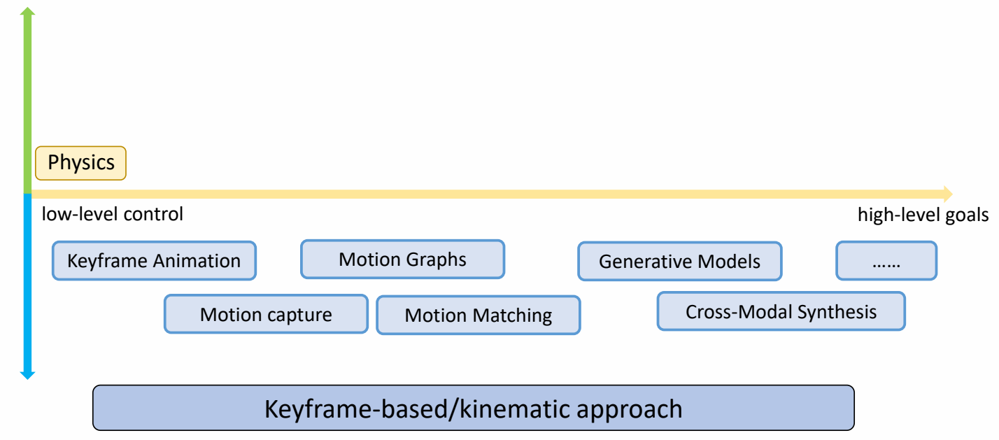
Physics-based/Dynamic Approaches
✅ 不直接生成姿态，而是控制量（例如力），通过物理仿真真正改变角色。
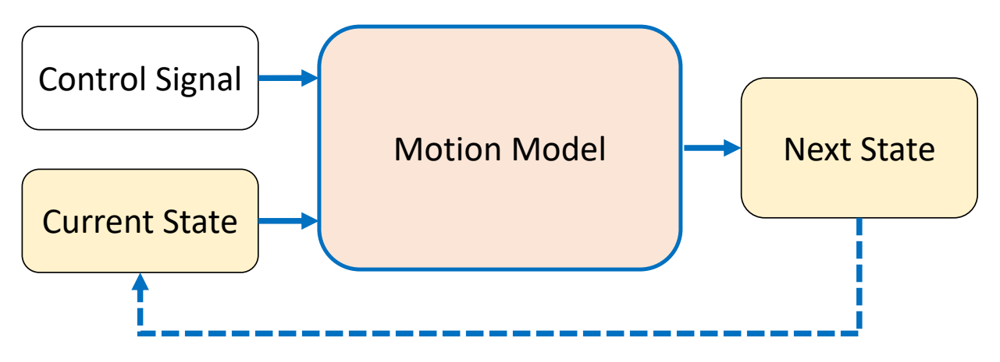
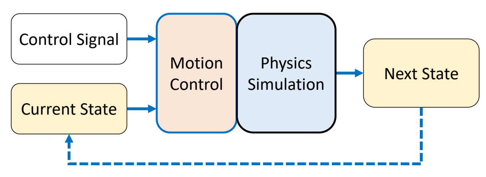
P59
Ragdoll Simulation
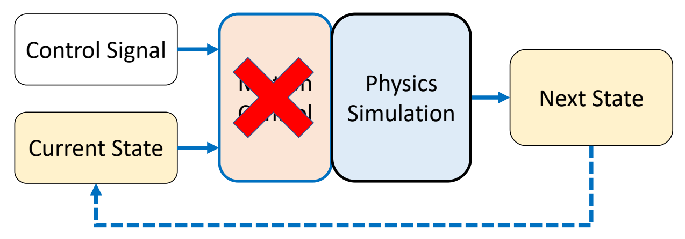
✅ 用于人死掉、失去意识、突发事件来不及响应的情况。
P63
物理仿真角色动画的应用
[DeepMotion: Virtual Reality Tracking]
[Ye et al. 2022: Neural3Points]
[Yang et al. 2022: Learning to Use Chopsticks]
✅ 抓住手指动作细节 P67
P68
物理角色的建模方法
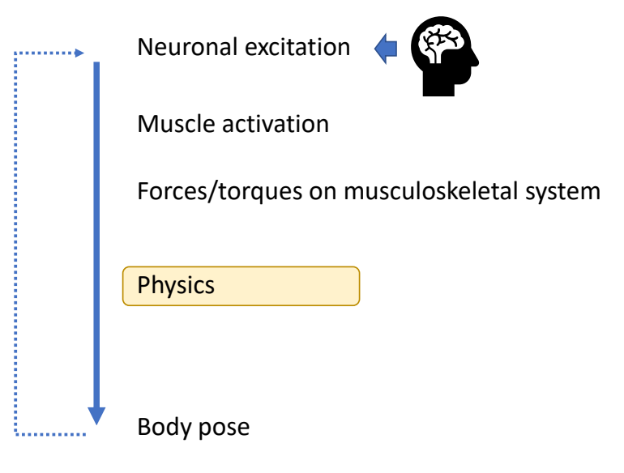
✅ 构建完整的神经系统和肌肉系统。
✅ （1）神经肌肉机理不清楚。
✅ （2）自由度高，仿真效率低。
✅ 所以实际上会做简化，对关节力矩进行建模
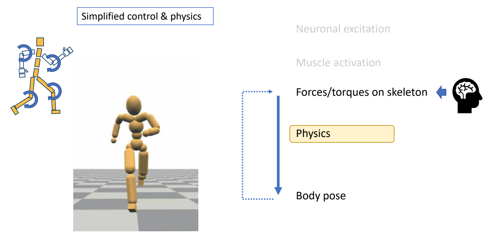
✅ 用关节力矩仿真肌肉的力。
P70
Force & Torque
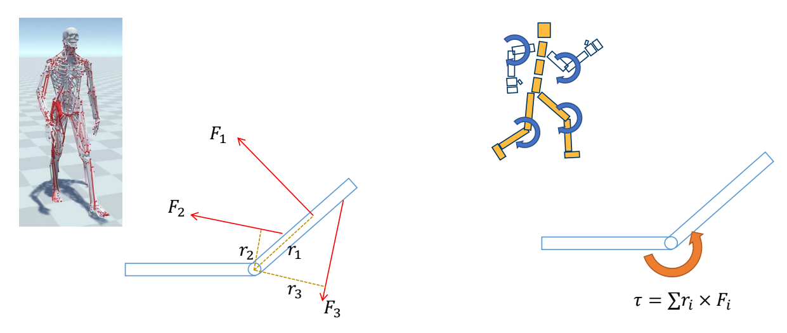
P71
Keyfrmae Control
Proportional-Derivative (PD) Control
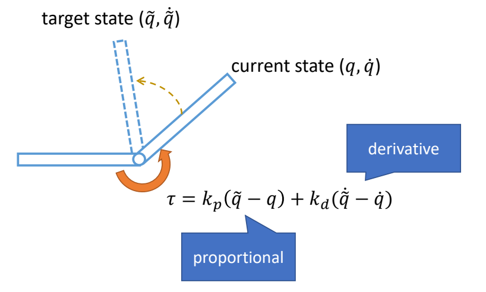
✅ 根据当前状态与目标状态的差距，计算出当前状态运动到目标状态所需要的力矩。
P72
Tracking Controllers
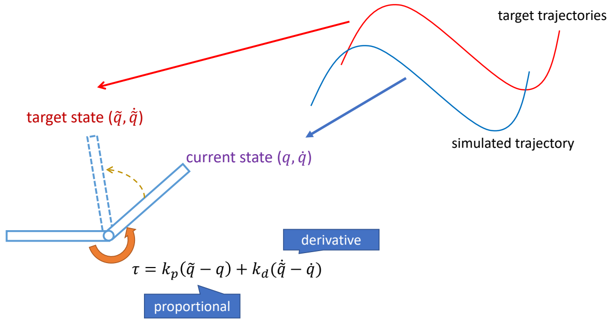
✅ 比如要做一个动作，给出目标高度的轨迹，采用PD控制生成每个关节的力矩，大概能产生要做的动作
[Hodgins and Wooten 1995, Animating Human Athletics]
P76
Trajectory Crafting
NaturalMotion - Endorphin
✅ 关键帧→力→仿真
实际上这个方法很难用起来，因为调整仿真参数甚至比直接做关键帧更花时间。
P79
Spacetime/Trajectory Optimization
✅ 用优化方法实现，结合重定向
[Liu et al 2010. SAMCON]
[Wampler and Popović. 2009. Optimal gait and form for animal locomotion]
[Hamalainen et al. 2020, Visualizing Movement Control Optimization Landscapes]
✅ 这是高维非线性优化问题，非常准解。
P83
Abstract Models 简化模型
通过简化模型实现对一些动作的控制，但只能做简单动作
SIMBICON
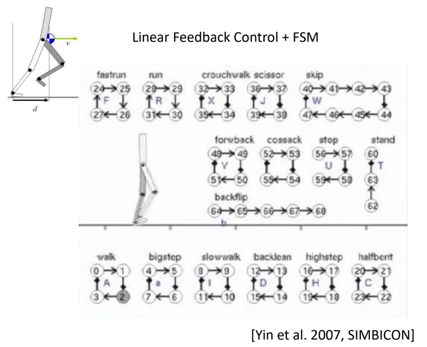
✅ 用简化模型把想要的动作描述出来，来指导角色控制。
✅ 基于此实现稳定的多技能的控制策略。
✅ 控制简化、缺少细节，走路像机器人。
✅ 简化模型思路，可以实现对一些动作进行控制，且结果鲁棒，允许使用外力与角色交互。
✅ 缺点：只能走路，不能复杂动作。
P85
Inverted Pendulum Model
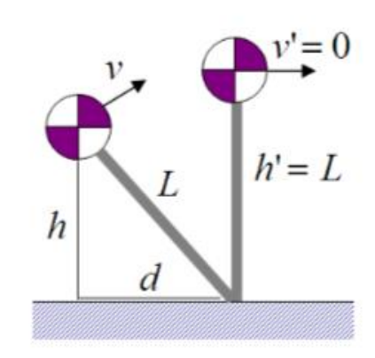
[Coros et al. 2010]
P87
Reinforcement Learning
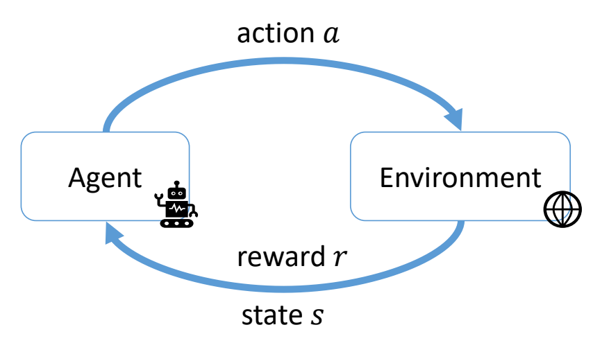
P89
DRL-based Tracking Controllers
[Liu et al. 2016. ControlGraphs]
[Liu et al. 2018]
[Peng et al. 2018. DeepMimic]
✅ 利用DRL做复杂动作，但还只是动作复现。
P90
Multi-skill Characters
引入状态机，完成更复杂动作。
State Machines of Tracking Controllers
引入Motion Maching
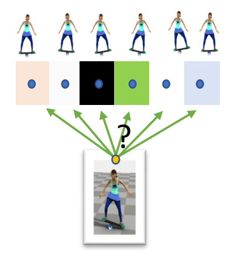
[Liu et al. 2017: Learning to Schedule Control Fragments]
Hierarchical Controllers
在高级指令控制下，综合使用动作来完成功能
Generative Control Policies
| 运动生成模型 | 控制生成模型 |
|---|---|
| 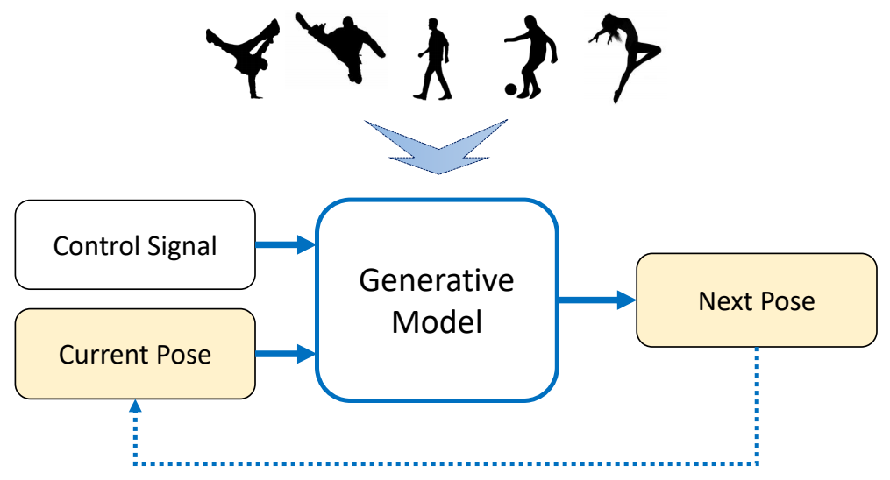 | 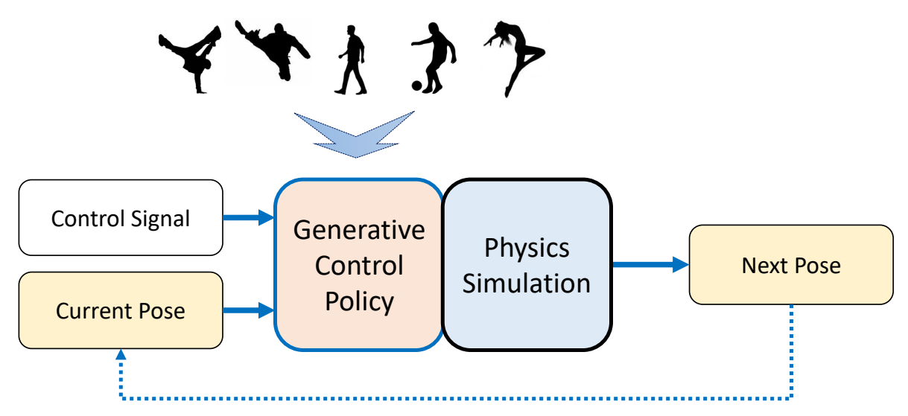 |
总结
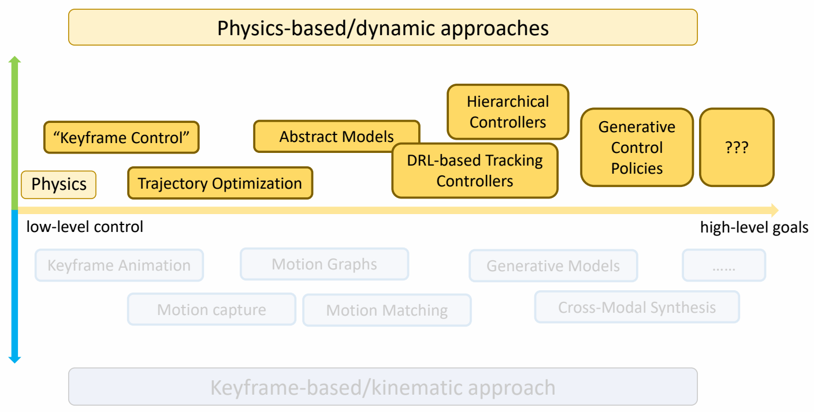
✅ 回顾计算机角色动化领域最近30年主要研究方向。
P102
About This Course
-
What will not be covered
- How to use Maya/Motion Builder/Houdini/Unity/Unreal Engine…
- How to become an animator
-
What will be covered
-
Methods, theories, and techniques behind animation tools
- Kinematics of characters
- Physics-based simulation
- Motion control
-
Ability to create an interactive character
-
本文出自CaterpillarStudyGroup，转载请注明出处。
https://caterpillarstudygroup.github.io/GAMES105_mdbook/
P2
Outline
-
Review of Linear Algebra
- Vector and Matrix
- Translation, Rotation, and Transformation
-
Representations of 3D rotation
- Rotation matrices
- Euler angles
- Rotation vectors/Axis angles
- Quaternions
✅ 这节课大部分内容会跳过，因为前面课程讲过好多遍了
P3
Review of Linear Algebra
Vectors and Matrices
a few slides were modified from GAMES-101 and GAMES-103
P24
✅ 两个单位向量的叉乘不一定是单位向量。
✅ 要得到方向，应先叉乘再单位化
✅ \(n=\frac{a\times b}{||a\times b||}\)（正确）、\(n=\frac{a}{||a||} \times \frac{b}{||b||}\)（错误）
P26
How to find the rotation between vectors?
问题描述
✅ 已知\(a,b\) , 求旋转。

求旋转轴
P27
Any vector in the bisecting plane can be the axis
$$ 𝒖 =\frac{𝒂 × 𝒃}{||𝒂 × 𝒃||} $$
求旋转角
P28
The minimum rotation:
$$
\theta = \mathrm{arg} \cos \frac{a\cdot b}{||a||||b||}
$$

✅ \(u\) 为旋转轴，\( \theta \) 为旋转角。
P33
How to rotate a vectors?
问题描述
已知 \(a\) 和旋转 \((𝒖, \theta )\) 求终点 \(b\)

解题方法
\(a\) 移动到 \(b\) 看作是先移动 \(𝒗\) 再移动 \(t\)，分别计算 \(𝒗\) 和 \(t\) 的方向和长度。
$$ 𝒗 \gets 𝒖 \times 𝒂 $$
$$ 𝒕 \gets 𝒖 \times 𝒗 = 𝒖 \times( 𝒖 \times 𝒂) $$

计算过程
P35
$$ 𝒗 = (\sin \theta) 𝒖 \times 𝒂 𝒕 =(1-\cos \theta ) 𝒖 \times( 𝒖 \times 𝒂) $$
Rodrigues' rotation formula
$$ 𝒃 = 𝒂 + (\sin \theta) 𝒖 × 𝒂 + (1-\cos \theta ) 𝒖 \times( 𝒖 \times 𝒂) $$
P53
Matrix
Matrix Form of Cross Product
$$ \begin{align*} c=a\times b= & \begin{bmatrix} a_yb_z-a_zb_y \\ a_zb_x-a_xb_z \\ a_xb_y-a_yb_x \end{bmatrix}\\ = & \begin{bmatrix} 0 & -a_z & a_y \\ a_z & 0 & -a_x \\ -a_y & a_x & 0 \end{bmatrix}\begin{bmatrix} b_x \\ b_y \\ b_z \end{bmatrix}=[a]_\times b \end{align*} $$
$$ [a]_\times +[a]^ \mathbf{T} _\times =0 \quad \quad \mathrm{skewsymmetric} $$
P56
$$ \begin{align*} a \times b = &[a] _ \times b \\ a \times (b \times c) = & [a] _ \times ( [b] _ \times c ) \\ = & [a] _ \times [b] _ \times c \\ a \times (a \times c) = & [a] ^2 _ \times b \\ (a \times b) \times c = & [a\times b] _ \times c \\ \end{align*} $$
✅ 最后一个公式注意一下，叉乘不满足结合律。
P57
How to rotate a vectors?
问题描述
已知 \(a\) 和旋转 \((𝒖, \theta )\) 求终点 \(b\)
把前面的结论转化为矩阵形式
$$ \begin{align*} b = & a+(\sin \theta )u \times a +(1-\cos \theta)u \times(u \times a) \\ b = & (I+(\sin \theta ))[u]_ \times + (1-(\cos \theta )[u]^2_ \times ) a \\ = & Ra \end{align*} $$
✅ 把前面的叉乘公式转化为点乘形式
结论
Rodrigues' rotation formula
$$ R = I+(\sin \theta )[u]_ \times + (1-\cos \theta )[u]^2_ \times $$
✅ \(R\) 是旋转 \((u, \theta )\) 对应的旋转矩阵。
P62
Determinant of a Matrix
定义

✅ 行列式的计算：红色相乘减蓝色相乘。
P63
公式
- det \(I = 1\)
- det \(AB = \text{ det } A ∗ \text{det } B\)
- det \(A^T\) = det \(A\)
- If \(A\) is invertible，det \(A^{−1}\) = \((\text{det } A)^{−1}\)
- If \(U\) is orthogonal，\(\text{det } U = ± 1\)
P64
Cross Product as a Determinant
$$ \begin{align*} c=a\times b= & \begin{bmatrix} a_yb_z-a_zb_y \\ a_zb_x-a_xb_z \\ a_xb_y-a_yb_x \end{bmatrix}\\ = & \text{det } \begin{bmatrix} i & j & k \\ a_x & a_y & a_z \\ b_x & b_y & b_z \end{bmatrix} \end{align*} $$
✅ 用行列式运算规则来计算叉乘结果。
P66
Eigenvalues and Eigenvectors
For a matrix \(A\), if a nonzero vector \(x\) satisfies
$$
Ax=\lambda x
$$
Then:
\(\lambda\): an eigenvalue of \(A\)
\(x\): an eigenvector of \(A\)
Especially, a \(3\times 3\) orthogonal matrix \(U\)
has at least one real eigenvalue: \(\lambda=\text{det } U = ±1\)
P67
Rigid Transformation
Translation, rotation, and coordinate transformation

✅ 刚体变换不能改变形状和大小，因此没有Scaling
P69
Scaling

P70
Translation

P72
Rotation

P73
Rotation Matrix
定义
- Rotation matrix is orthogonal:
$$ R^{-1}=R^{T} \quad R^TR=RR^T=1 $$
- Determinant of \(R\)
$$ \text{det } R = + 1 $$ - Rotation maintains length of vectors $$ ||Rx|| = ||x|| $$
✅ 公式2：\(R\) 不会改变左、右手系
✅ 公式3：\(R\) 是刚性变换，不改变大小
P75
Combination of Rotations

P76
Rotation around Coordinate Axes

$$ R_x(\alpha )=\begin{pmatrix} 1 & 0 & 0 \\ 0 & \cos\alpha & -\sin \alpha \\ 0 & \sin \alpha & \cos \alpha \end{pmatrix} $$
$$ R_y(\beta )=\begin{pmatrix} \cos \beta & 0 & \sin \beta \\ 0 & 1 & 0 \\ -\sin \beta & 0 & \cos \beta \end{pmatrix} $$
$$ R_z(\gamma )=\begin{pmatrix} \cos \gamma & -\sin \gamma & 0 \\ \sin \gamma & \cos \gamma & 0 \\ 0 & 0 & 1 \end{pmatrix} $$
✅ 沿着哪个轴转，那个轴上的坐标不会改变。
✅ 三个基本旋转可以组合出复杂旋转。
P79
Rotation Axis and Angle
Rotation matrix \(R\) has a real eigenvalue: +1
$$
Ru=u
$$
In other words, \(R\) can be considered as a rotation around axis \(u\) by some angle \(\theta \)
How to find axis 𝒖 and angle \(\theta \)?

✅ 用 \(R\) 旋转时，向量 \(u\) 不会变化。
✅ 对于任意 \(R\)，都存在这样一个 \(u\).
✅ \(u\) 是 \(R\) 的旋转轴。
P80
根据旋转矩阵求轴角

P81

✅ \({u}' \) 与 \({u} \) 共线，\({u}' \) 单位化得到 \({u} \)．
✅ \(q\) 和 \(-q\) 两种表示方法会引入插值问题，需要注意。
P82
$$ u\gets {u}' =\begin{bmatrix} r_{32}-r_{23} \\ r_{13}-r_{31} \\ r_{21}-r_{12} \end{bmatrix} $$
$$ \text{When } R\ne R^T \Leftrightarrow \sin \theta \ne 0\Leftrightarrow \theta \ne 0^{\circ} \text{ or } 180^{\circ} $$
P83
基于罗德里格公式求轴角

✅ 从 \(R\) 的公式也能得出相同的结论
✅ \(u → {u}' → \)旋转角度
P85
旋转矩阵的意义
旋转

P86
旋转 + 平移

P87
Representations of 3D Rotation
P91
旋转矩阵
Parameterization of Rotation
旋转矩阵有9个参数，但实际上degrees of freedom (DoF) = 3
✅ det 只是把空间减少一半，没有降低自由度
P93
Interpolation
What is good interpolation?
- result is valid at any time \(t\)
- Constant speed is preferred
| 平移 | 旋转 | |
|---|---|---|
 |  | |
| \(x_t=(1-t)x_0+tx_1\) ✅ 平移使用线性插值 | ✅ 旋转不适合线性插值。 | |
| 合法 | ✅ 对于任意 \(t\), \(x_t\) 一定是合法的。 | |
| 速度可控 | ✅ 运动的速度是常数，因此速度可控。 |
P99
结论
- Easy to compose? \(\quad \quad \quad {\color{Red} \times } \)
✅ 9个参数没有直接的意义，且为了满足正交阵，参数之间是耦合的。
- Easy to apply? \(\quad \quad \quad \quad {\color{Green} \surd }\)
- Easy to interpolate? \(\quad \quad {\color{Red} \times } \)
P100
Euler angles
Basic rotations

$$ R_x(\alpha )=\begin{pmatrix} 1 & 0 & 0 \\ 0 & \cos\alpha & -\sin \alpha \\ 0 & \sin \alpha & \cos \alpha \end{pmatrix} $$
$$ R_y(\beta )=\begin{pmatrix} \cos \beta & 0 & \sin \beta \\ 0 & 1 & 0 \\ -\sin \beta & 0 & \cos \beta \end{pmatrix} $$
$$ R_z(\gamma )=\begin{pmatrix} \cos \gamma & -\sin \gamma & 0 \\ \sin \gamma & \cos \gamma & 0 \\ 0 & 0 & 1 \end{pmatrix} $$
combination of three basic rotations
Any rotation can be represented as a combination of three basic rotations
P102
Any combination of three basic rotations are allowed
- Excluding those rotate twice around the same axis
- XYZ, XZY, YZX, YXZ, ZYX, ZXY, XYX, XZX, YXY, YZY, ZXZ, ZYZ
P103
Conventions of Euler Angles
intrinsic rotations: axes attached to the object
$$ R_x(\alpha )R_y(\beta )R_z(\gamma ) $$
extrinsic rotations: axes fixed to the world
$$ R_z(\gamma )R_y(\beta )R_x(\alpha ) $$
✅ 使用欧拉角时应先明确所使用的 convetion 和顺序。
✅ 不同的商业软件可能有不同的内置参数。
✅ maya 和 unity 都是 extrinsic.
✅ maya 可选顺序，Unity 固定 Zxy
P104
Gimbal Lock
When two local axes are driven into a parallel configuration, one degree of freedom is “locked”
✅ 当其中两个轴共线时，会丢失一个自由度，此时表示不唯一（奇异点）
P105
结论

✅ 插值时需注意作用域为 \([-\pi , \pi ]\)，否则容易出现翻转现象。
P107
Rotation Vectors / Axis Angles

✅ 粗体 \(\theta \)：轴角表示法描述的旋转
✅ 细体 \(\theta \)：以 \(u\) 为轴的旋转角度

✅ 应用时要先转为旋转矩阵，做旋转组合时也要借助旋转矩阵
P110
Interpolating Rotation Vectors / Axis Angles
线性插值
可以保证插值结果合法，但不能保证旋转速度恒定

P111
匀速插值
可以保证插值结果合法且匀速，但旋转较复杂

✅ 这个方法没听懂，可以实现允许插值。
P112
结论

- Easy to compose? \(\quad \quad {\color{Green} \surd } \quad \quad \) But hard to manipulate
- Easy to apply? \(\quad \quad \quad {\color{Red} \times } \quad \quad \) Need to convert to matrix
- Easy to interpolate? \(\quad \quad {\color{Green} \surd } \quad \quad \) Linear interpolation works, but not perfect
- No Gimbal lock \(\quad \quad {\color{Green} \surd } \quad \quad \) need to deal with singularities
P113
Quaternions
P116
定义
-
Extending complex numbers
$$ q =a+bi +cj +dk \in \mathbb{H} ,a,b,c,d\in \mathbb{R} $$ -
\(i^2=j^2=k^2=ijk=-1\)
-
\(ij=k,ji=-k(^*\text{cross product})\)
-
\(jk=i,kj=-i\)
-
\(ki=j,ik=-j\)
$$ q=w+xi+yj+zk \quad \Rightarrow \quad q=\begin{bmatrix} w\\ x\\ y\\ z \end{bmatrix}=\begin{bmatrix} w\\ v \end{bmatrix} $$
$$ q =[w,v]^T \in \mathbb{H} ,w\in \mathbb{R},v\in \mathbb{R}^3 $$
$$ w =[w,0]^T : \text{ scalar quaternion } $$
$$ v =[0,v]^T : \text{ pure quaternion } $$
P117
Quaternion Arithmetic
$$ q =a+bi +cj +dk \in \mathbb{H} ,a,b,c,d\in \mathbb{R} $$
Conjugation: \(\quad \quad q^*=a-bi-cj-dk\)
\(
\)
Scalar product: \(\quad \quad tq=ta+tbi+tcj+tdk\)
\(
\)
Addition: \(\quad \quad q_1+q_2=(a_1+a_2)+(b_1+b_2)i+(c_1+c_2)j+(d_1+d_2)k\)
\(
\)
Dot product: \(\quad \quad q_1\cdot q_2=a_1a_2+b_1b_2+c_1c_2+d_1d_2\)
\(
\)
Norm: \(\quad \quad ||q||=\sqrt{a^2+b^2+c^2+d^2} =\sqrt{q\cdot q}\)
P118
Quaternion Multiplication
$$ q_1q_2=(a_1+b_1i+c_1j+d_1k)*(a_2+b_2i+c_2j+d_2k) $$
$$ q_1q_2=a_1a_2-b_1b_2-c_1c_2-d_1d_2 $$
$$
+(b_1a_2+a_1b_2-d_1c_2+c_1d_2)i
$$
$$
+(c_1a_2+d_1b_2+a_1c_2-b_1d_2)j
$$
$$ +(d_1a_2-c_1b_2+b_1c_2+a_1d_2)k $$
note:
- \(i^2=j^2=k^2=ijk=-1\)
- \(ij=k,ji=-k (^* \text{cross product})\)
- \(jk=i,kj=-i\)
- \(ki=j,ik=-j\)
✅ \(q_1 \cdot q_2\) 和 \(q_1q_2\) 是两种不同的运算。
P120
Conjugation: \(\quad \quad q^*=[w,-v]^T\)
\(
\)
Scalar product: \(\quad \quad tq=[tw,tv]^T\)
\(
\)
Addition: \(\quad \quad q_1+q_2=[w_1+w_2,v_1+v_2]^T\)
\(
\)
Dot product: \(\quad \quad q_1\cdot q_2=w_1w_2+v_1 \cdot v_2\)
\(
\)
Norm: \(\quad \quad ||q||=\sqrt{w_1w_2+v_1 \cdot v_2} =\sqrt{q\cdot q}\)
P122
$$ q_1q_2=\begin{bmatrix} w_1\\ v_1 \end{bmatrix}\begin{bmatrix} w_2 \\ v_2 \end{bmatrix}=\begin{bmatrix} w_1w_2-v_1\cdot v_2\\ w_1v_2+w_2v_1+v_1\times v_2 \end{bmatrix} $$
Non-Commutativity:
$$ q_1q_2\ne q_2q_1 $$
Associativity:
$$ q_1q_2q_3=(q_1q_2)q_3=q_1(q_2q_3) $$
P123
Conjugation:
$$ (q_1q_2)^\ast=q^\ast_2q^\ast_1 $$
Norm:
$$ ||q||^2 = q^ \ast q =qq^\ast $$
Reciprocal:
$$ \begin{matrix} qq^{-1}=1 & \Rightarrow & q^{-1}=\frac{q^*}{||q||^2}\\ q^{-1}q=1 & & \end{matrix} $$
P124
Unit Quaternions
$$ \begin{matrix} q=\begin{bmatrix} w\\ v \end{bmatrix} &||q||=1 \end{matrix} $$
For any non-zero quaternion \(\tilde{q} \):
$$ q=\frac{\tilde{q}}{||\tilde{q}||} $$
Reciprocal:
$$ \begin{matrix} q^{-1}=q^\ast =\begin{bmatrix} w\\ -v \end{bmatrix} &\Leftrightarrow & R^{-1}=R^T \end{matrix} $$
P125
| 2D | 3D |
|---|---|
 |  |
| unit complex number | unit quaternion ✅ 所有单位四元数构成 4D 空间上的单位球核。 |
| \(z = \cos \theta + i\sin \theta\) | \(q = \begin{bmatrix} w\\v\end{bmatrix}= [\cos \frac{\theta}{2} , u\sin \frac{\theta}{2}] \quad \mid\mid u \mid\mid = 1\) |
same information as axis angles \((u,\theta)\) But in a different form
P127
轴角表示 -> 四元数表示
Any 3D rotation \((v,\theta)\) can be represented as a unit quaternion
$$ \begin{matrix} \text{Angle}: & \theta =2 \text{ arg } \cos w\\ \text{ Axis}: & u=\frac{v}{||v||} \end{matrix} $$
P128
Rotation a Vector Using Unit Quaternions
已经向量p和单位四元数q，求p经过q旋转后的向量。

$$ \begin{matrix} \text{Unit quaternion}: & q=\begin{bmatrix} w\\ v \end{bmatrix}=[\cos \frac{\theta }{2} ,u\sin \frac{\theta }{2}]\\ \text{ 3D vector}:p & \text{ Rotation result }: {p}' \end{matrix} $$
Then the rotation can be applied by quaternion multiplication:
✅ 纯方向 \(p\) 可用四元数表示为 \([0 \quad p ]\)
✅ \({p}' = R (q) \cdot p\)
P129
$$ \begin{bmatrix} 0 \\ {p}' \end{bmatrix}=q\begin{bmatrix} 0\\ p \end{bmatrix}q^\ast =(-q)\begin{bmatrix} 0\\ p \end{bmatrix}(-q)^\ast $$
\(\mathbf{q}\) and \(−\mathbf{q}\) represent the same rotation
P131
Combination of Rotations
证明过程跳过，结论：
$$ \begin{matrix} \text{Combined rotation}: & q=q_2q_1 \end{matrix} $$
P133
Quaternion Interpolation

A unit hypersphere in 4D space
✅ 单位四元数表现出来是 4D 空间中的球核，\(q_1q_2\) 是球核上的两个点，希望沿球面轨迹插值。
P135
Linear Interpolation
$$ q_t=(1-t)q_0+tq_1 $$

\(q_t\) is not a unit quaternion
P136
Linear Interpolation + Projection
$$ \begin{matrix} \tilde{q}_t=(1-t)q_0+tq_1 & q_t=\frac{\tilde{q}_t }{||\tilde{q}_t||} \end{matrix} $$

$$ \begin{matrix} q_t \text{ is a unit quaternion}\\ \text{Rotational speed is not constant} \end{matrix} $$
✅ 当 \(u_0＝-u_1\) 时，可能得到某个 \(\tilde{q} _t = 0\)，无法单位化
✅ 解决方法:根据 \(u_0＝-u_0\)，先找到 \(u_0\) 和 \(u_1\) 在数值上最接近的四元数表示。
P137
SLERP: Spherical Linear Interpolation
思考
$$ q_t=a(t)q_0+b(t)q_1 $$
如何设计a和b，让插值结果速度恒定？

$$ r=a(t)p+b(t)q $$
计算
Consider the angle \(\theta\) between \(p,q\):
$$ \cos \theta =p\cdot q $$
We have:
$$ \begin{matrix} p \cdot r=a(t)p\cdot p+b(t)q\cdot p\\ \Rightarrow \cos t \theta =a(t)+b(t)\cos \theta \end{matrix} $$
similarly:
$$
\begin{matrix}
q \cdot r=a(t)q\cdot p+b(t)\\
\Rightarrow \cos (1- t) \theta =a(t)\cos\theta +b(t)
\end{matrix}
$$
结论
then we have：
$$ a(t)=\frac{\sin [(1-t)\theta ]}{\sin \theta } ,b(t)=\frac{\sin t \theta }{\sin \theta } $$

P139
$$ q_t=\frac{\sin [(1-t)\theta ]}{\sin \theta }q_0+\frac{\sin t \theta }{\sin \theta }q_1 $$
$$ \cos \theta=q_0\cdot q_1 $$
P140
结论
Rotations can be represented by unit quaternions
Representation is not unique
\(q, −q\) represent the same rotation
- Easy to compose? \(\quad \quad {\color{Green} \surd }\quad \quad \) Need normalization, hard to manipulate,
- Easy to apply? \(\quad \quad \quad {\color{Green} \surd }\quad \quad \) Quaternion multiplication
- Easy to interpolate? \(\quad {\color{Green} \surd }\quad \quad \) SLERP, need to deal with singularities
- No Gimbal lock \(\quad \quad \quad {\color{Green} \surd }\quad \quad \)
本文出自CaterpillarStudyGroup，转载请注明出处。
https://caterpillarstudygroup.github.io/GAMES105_mdbook/
P3
Outline
-
Character Kinematics
- Skeleton and forward Kinematics
-
Inverse Kinematics
- IK as a optimization problem
- Optimization approaches
- Cyclic Coordinate Descent (CCD)
- Jacobian and gradient descent method
- Jacobian inverse method
P4
Character Kinematics
the study of the motion of bodies without reference to mass or force
P8
joint, bone, skeleton
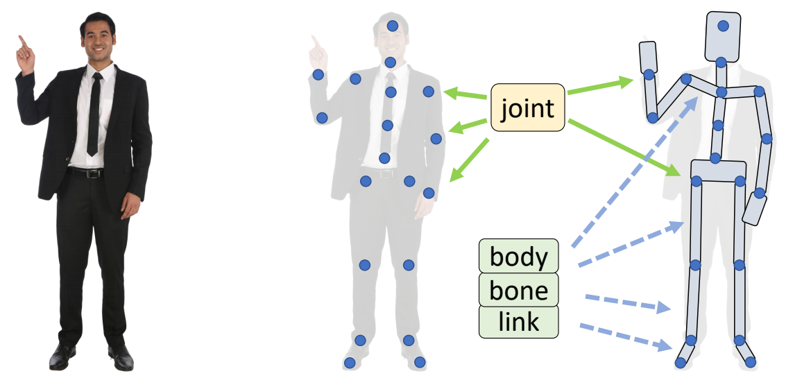
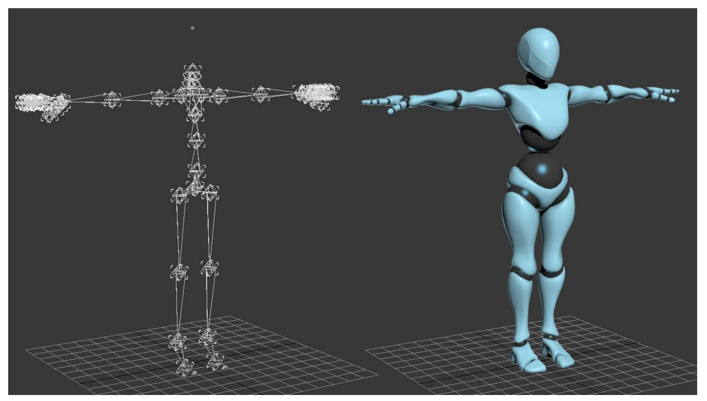
✅ 关注关节的位置和旋转
P13
Kinematics of a Chain
问题描述
要使手臂摆成指定的动作，每个关节在各自坐标系下的旋转是多少？
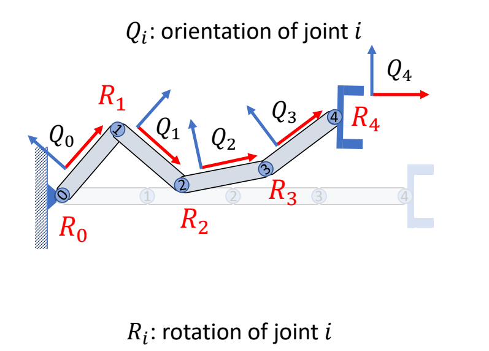
求\(Q_0, Q_1, Q_2, Q_3, Q_4\)
P14
初始pose
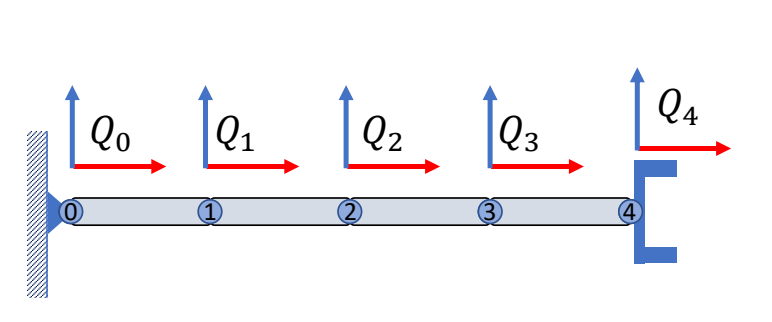
$$ Q_0=Q_1=Q_2=Q_3=Q_4=I $$
✅ 这一个定义了5个关节的手臂。在每个关节上绑上一个坐标系。
P15
旋转关节4
把关节4旋转R4以后
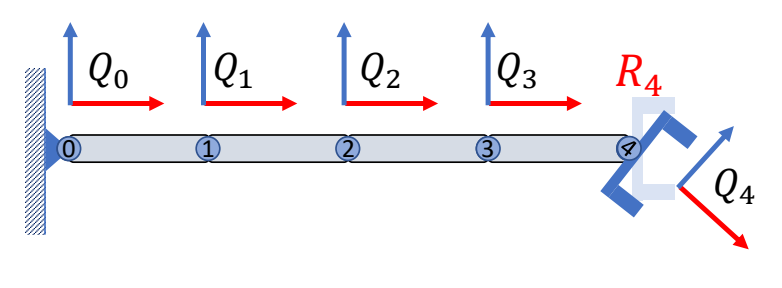
✅ \(Q\)：在世界坐标系下的朝向
✅ \(R\)：在局部坐标系下的旋转
$$
\begin{matrix}
Q_0=I\quad\\
Q_1=I\quad\\
Q_2=I\quad\\
Q_3=I\quad\\
Q_4={\color{Red}{R_4}}
\end{matrix}
$$
P16
旋转关节3
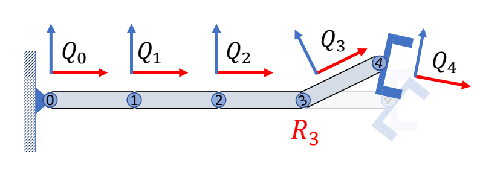
把关节3旋转R3以后，Q3和Q4会同时受到影响
$$
\begin{matrix}
Q_0=I\quad\quad\\
Q_1=I\quad\quad\\
Q_2=I\quad\quad\\
Q_3={\color{Red}{R_3}}\quad\\
Q_4={\color{Red}{R_3}}R_4
\end{matrix}
$$
P17
依次旋转关节2， 1， 0
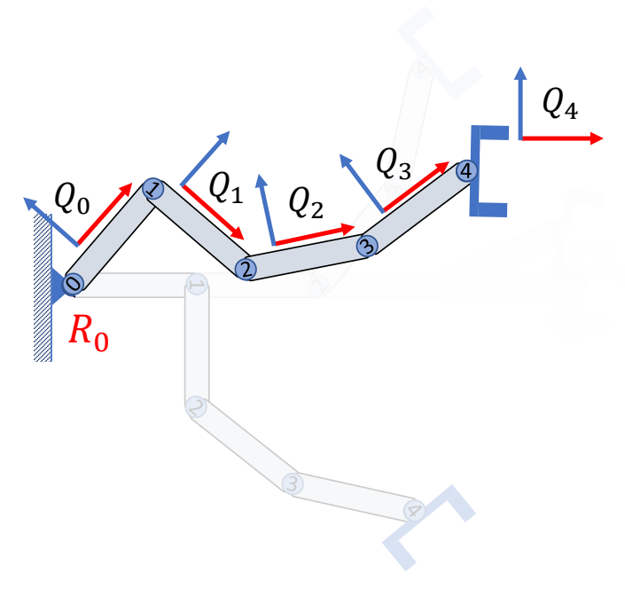
$$ \begin{matrix} Q_0={\color{Red}{R_0}}\quad \quad\quad\quad \\ Q_1={\color{Red}{R_0}}R_1 \quad\quad\quad \\ Q_3={\color{Red}{R_0}}R_1R_2R_3\quad \\ Q_4={\color{Red}{R_0}}R_1R_2R_3R_4 \end{matrix} $$
P20
简化公式，用递推的形式描述
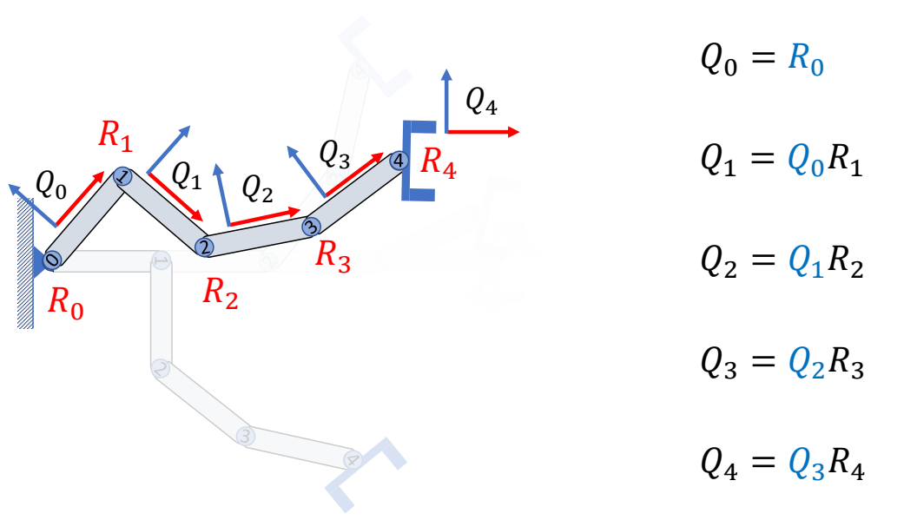
P21
From rotation(local) to orientation(global)
$$ Q_i = Q_{i-1}R_i $$
From orientation(global) to rotation(local)
$$ R_i = Q^T_{i-1}Q_i $$
✅ 这些 \(Q\) 都是全局旋转，\(R\) 是局部旋转。
Kinematics with position
P23
初始状态
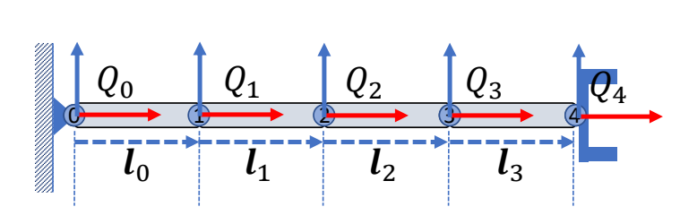
✅ \( 𝒍 \)：子关节位置在父坐标系下的坐标。
P31
positon with pose
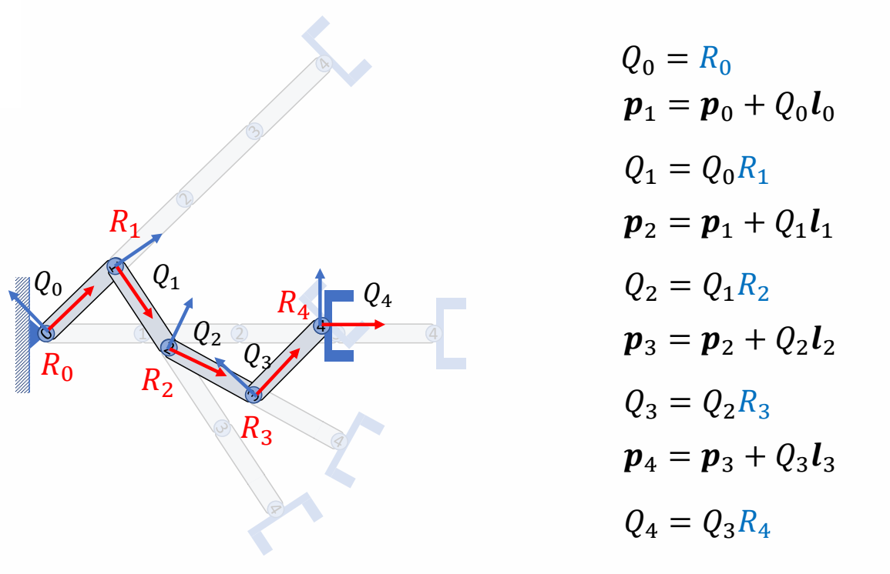
✅ \(p\) 是全局位置，\( 𝒍 \) 是局部偏移。
P37
Forward Kinematics of a Chain: Summary
position
Given the rotations of all joints \(R_i\), find the coordinates of \(x_0\) in the global frame \(x\):
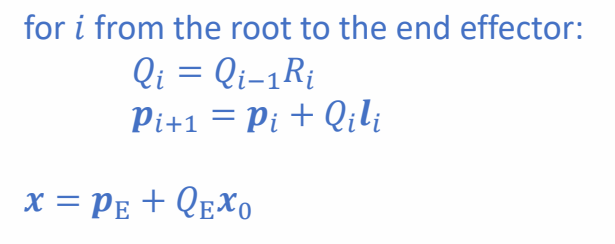
✅ \(x_0\) 是 \(R_4\) 坐标系下的点，求它在某个父坐标系下的位置。
✅ \(p\)：关节在全局坐标系下的位置
✅ 第1步：根据 \(R_i\) 和 \( 𝒍 _i\) 求出 \(Q_i\) 和 \(P_i\)
✅ 第2步：\(E\) 可以是任意父结点，公式都适用
P38
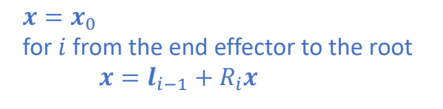
✅ 是上一页的另一种写法，不需提前算出中间变量。
P39
rotation
Given the rotations of all joints \(R_i\), find the coordinates of \(x_0\) relative to the local frame of \(Q_k\):
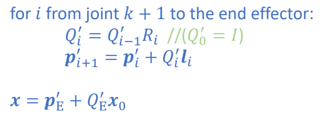
✅ 已知全局坐标系下的坐标，求 \(Q_k\) 下的坐标。
P40
✅ 对应上一页的另一种写法
P41
Kinematics of a Character
骨骼的参数化表示
✅ 把角色建模成多条关节链。
P43
✅ 以不同关节为 root，同样旋转会得到不同效果。
P45
Types of Joints
P50
| knee, elbow \({\color{Red}{1 \text{DoF}}}\) \(\theta_{\min }\le \theta\le \theta_{\max } \) hinge joint revolute joint | ||
 | hip, shoulder \({\color{Red}{3 \text{DoF}}}\) \(\theta_{\min }\preceq \theta \preceq \theta_{\max } \) ball-and-socket joint | |
| 手腕。其实手腕不能自转。 2 Dof |
✅ 关节的自由度最多为3，因为不能自主移动。Hips 除外。 ✅ 自由度：一个物理系统，需要多少参数可以唯一准确地描述它的状态。
✅ 6 DOF＝3 平移 ＋ 3 旋转。
姿态的参数化表示 Pose Parameters
P55
$$ (t_0,R_0,R_1,R_2\dots \dots ) $$
$$ \text{root } \mid \text{ internal joints} $$
joints are typically in the order that every joint precedes its offspring
for \(i\) in joint_list:
$$ \begin{align*} p_i= & i^,\text{ s parent joint} \\ Q_i=& Q_{pi}R_i \\ x_i= & x_{pi} + Q_{pi}l_i \end{align*} $$
✅ 一个动作的参数化表示：
✅ 全局位置＋root 朝向＋各关节旋转
✅ 通常要求，关节顺序为父在前子在后，这样只须遍历一遍就能完成 FK.
❓ Q2: how should we allow stretchable bones?
✅ 答：增加参数，3 Dof 增加为 6 Dof.
P58
Example: motion data in a file
BVH files
- HIERARCHY: defining T-pose of the character
- MOTION: root position and Euler angles of each joints
See: https://research.cs.wisc.edu/graphics/Courses/cs-838-1999/Jeff/BVH.html
P59
Inverse Kinematics
🔎 A. Aristidou, J. Lasenby, Y. Chrysanthou, and A. Shamir. 2018.
Inverse Kinematics Techniques in Computer Graphics: A Survey.
Computer Graphics Forum
P61
Forward and Inverse Problems
For a system that can be described by a set of parameters \(\theta \), and a property 𝒙 of the system given by
$$ x=f(\theta ) $$
Forward problem:
-
Given \(\theta \), we need to compute \(x \)
-
Easy to compute since \(f\) is known, the result is unique
-
DoF of \( \theta \) is often much larger than that of \(x \). We cannot easily tune \(\theta \) to achieve a specific value of \(x\).
Inverse problem:
-
Given \(x \), we need to find a set of valid parameters \(\theta \) such that\(x=f(\theta) \)
-
Often need to solve a difficult nonlinear equation, which can have multiple solutions
-
\(x\) is typically meaningful and can be set in intuitive ways
P62
Inverse Kinematics问题描述
Given the position of the end-effector \(x\), Compute the joint rotations \(R_i\)
P64
✅ 大部分情况下IK问题是多解问题
P68
two-joint IK
Step 1: Rotate joint 1 such that
$$ ||l_{ox}||=||l_{02}|| $$
✅ 使用余弦公式
Step 2: Rotate joint 0 such that
$$ l_{ox}=l_{02} $$
✅ 叉乘得到旋轴，点乘得到旋转角。
Step 3: Rotate joint 0 around \(l_{ox}\) if necessary
Multi Joint IK
P72
机械臂场景，关节有多个，指定末端结点的位置和朝向
$$ x=f(\theta ) \\ Q=Q(\theta ) $$
✅ 控制末端点的朝向比较简单，但控制末端点的位置比较难，因此重点考虑如何控制末端点的位置
P74
IK as an Optimization Problem
P75
Find \(\theta \) to optimize
$$ \min_{\theta } \frac{1}{2} ||f(\theta )-\tilde{x} ||^2_2 $$
✅ 用迭代的方法，从当前 motion 出发，优化出目标 motion.
P88
CCDIK
Cyclic Coordinate Descent (CCD)
Update parameters along each axis of the coordinate system
Iterate cyclically through all axes
P90
Cyclic Coordinate Descent (CCD) IK
✅ 叉乘得到旋转轴，点乘得到旋转角度。
| Rotate joint 3 such that \(𝒍_{34}\) points towards \(\tilde{x}\) | |
| Rotate joint 2 such that \(𝒍_{24}\) points towards \(\tilde{x}\) | |
| Rotate joint 1 such that \(𝒍_{14}\) points towards \(\tilde{x}\) | |
| Rotate joint 0 such that \(𝒍_{14}\) points towards \(\tilde{x}\) | |
| Rotate joint 3 such that \({l}'_{34}\) points towards \(\tilde{x}\) | |
| …… |
Iteratively rotation each joint to make the end-effector align with vector between the joint and the target
Easy to implement, very fast
The “first” joint moves more than the others May take many iterations to converge Result can be sensitive to the initial solution
✅ 一个动作序列做 CCD，可能结果不稳定，有跳变。
✅ 前面例子是 3210 的调整顺序，也可以是 0123 的顺序。
✅ 先移到的关节调整幅度会大一点，所以一般从末端开始。
P105
Gradient Descent
CCD下降没有考虑目标函数的性质，考虑目标函数的性质可以得出下降更快的方法。
✅ 关于梯度下降法跳过。
针对目标函数
$$ \min_{\theta } \frac{1}{2} ||f(\theta )-\tilde{x} ||^2_2 $$
其梯度为：
$$
\begin{align*}
\nabla_\theta F(\theta ^i)= & (\frac{\partial f}{\partial \theta }(\theta ^i))^T(f(\theta ^i)-\tilde{x})\\
= & J^T \Delta
\end{align*}
$$
✅ \(J\) 是 Jacobia矩阵， \( \Delta \) 是位置差
P106
因为更新函数为：
$$ \theta ^{i+1}=\theta ^i-\alpha J^T\Delta $$
$$ J= \frac{\partial f}{\partial \theta }=(\frac{\partial f}{\partial \theta_0 }\frac{\partial f}{\partial \theta_1 }\dots \frac{\partial f}{\partial \theta_n } ) $$
J是一个3*N的矩阵，N代表关节数。
怎么计算J？
方法一：使用machine learning framework的autograd功能
方法二：有限差分
方法三：Geometric Approach
P114
Geometric Approach
问题描述
Assuming all joints are hinge joint
求关节 1 旋转轴 \(a_1\)，对 \(x\) 位移的影响
计算过程
$$ {x}' -x=(\sin \delta \theta _i)a_i\times r_i+(1-\cos \delta \theta _i)a_i\times(a_i\times r_i) $$
$$ \frac{ \partial f }{\partial \theta _ i} = \lim _ {\delta \theta _ i \to 0} \frac{{x}'-x }{\delta \theta _ i}= a _ i\times r _i $$
P117
更通用的场景- ball joints
❓ How to deal with ball joints?
A ball joint parameterized as Euler angles:
$$ 𝑅_𝑖 = 𝑅_{𝑖𝑥}𝑅_{𝑖𝑦}𝑅_{𝑖𝑧} $$
can be considered as a compound joint with three hinge joints
✅ 一个ball joint可以看作是3个hint joint。因此占J矩阵的3列。
也可以写成这种形式：
$$ \frac{ \partial f }{\partial \theta _ {i\ast } } = a _ {i\ast } \times r _ i $$
f对某一个欧拉角的导数，等于这个欧拉角的轴叉乘上末端点到关节点的距离。
需要注意的是，这个的旋转轴a是在世界坐标系下的表示，因此要有一个坐标系的转换。
$$ \begin{align*} 𝒂_{𝑖𝑥} & =𝑄_{𝑖−1}𝒆_𝑥 \\ 𝒂_{𝑖𝑦}& = 𝑄_{𝑖−1}𝑅_{𝑖𝑥}𝒆_𝑦\\ 𝒂_{𝑖𝑧} &= 𝑄_{𝑖−1}𝑅_{𝑖𝑥}𝑅_{𝑖𝑦}𝒆_𝑧 \end{align*} $$
❓ 问：Can we parameterize a ball joint using axis-angle \(\theta u\) and compute Jacobian as
$$ \begin{matrix} \frac{\partial f}{\partial \theta _i} =\theta u\times r_i & ??? \end{matrix} $$
✅ 答：不可以。Jacobian for axis-angle representation has a rather complicated formulation…
P121
Jacobian Transpose / Gradient Descent
First-order approach, convergence can be slow Need to re-compute Jacobian at each iteration
✅ 怎么求 \(J\)，这里讲了 3 种方法：（1）backward 框架（2）差分（3）几何计算。实际上直接用 1 可以解决，不需要自己去算，因此跳过。
✅ 特点：（1）迭代次数比 CCD 少（2）计算量比 CCD 大。
P122
✅ 数值插值算法见 GAMES102.
P124
Quadratic Programming 二次规划问题
✅ 这几页介绍二次函数求极值的问题。
$$ \min_{\theta } F(\theta )=\frac{1}{2} \theta ^TA\theta +b^T\theta $$
where \(A\) is positive definite:
$$ A=A^T,\theta ^TA\theta \ge 0 \text{ for any } \theta $$
P126
公式直接求解
$$ \begin{matrix} \text{Gradient}: \nabla_\theta F(\theta )=A\theta +b \\ \text{Optimality condition}: \nabla_\theta F(\theta ^\ast )=0\\ {\color{Blue} \Downarrow } \\ \theta ^\ast =-A^{-1}b \end{matrix} $$
✅ 二次函数的极值点可以直接从公式求出来
P127
Gauss-Newton Method
✅ IK问题也可以转化为二次函数求极值的问题
$$ F(\theta )=\frac{1}{2} ||f(\theta )-\tilde{x} ||^2_2 $$
Consider the first-order approximation of \(f(\theta)\) at \(\theta^0\)
✅ 把 \(f(\theta )\) 在 \(\theta ^{\circ} \) 处一阶泰勒展开。
$$ \begin{align*} f(\theta)\approx & f(\theta^0) + \frac{\partial f}{\partial \theta} (\theta^0)(\theta-\theta^0) \\ = & f(\theta^0)+J(\theta-\theta^0) \end{align*} $$
P128
✅ 把它代入目标函数。
\begin{align*} f(\theta)\approx & \frac{1}{2}||f(\theta^0)+J(\theta -\theta ^0)-\tilde{x}||^2_2 \\ = &\frac{1}{2} (\theta -\theta ^0)^TJ^TJ(\theta -\theta ^0)\\ & +(\theta -\theta ^0)^TJ^T(f(\theta ^0)-\tilde{x})+c \end{align*}
P129
first-order optimality condition
✅ 令 \((\nabla F (\theta ))^T=0\)
$$ \begin{matrix} f(\theta)\approx \frac{1}{2}||f(\theta^0)+J(\theta -\theta ^0)-\tilde{x}||^2_2 \\ \Downarrow \\ (\nabla F (\theta ))^T=J^TJ(\theta-\theta^0)+J^T(f(\theta^0)-\tilde{x} )=0 \end{matrix} $$
P133
$$
J^TJ(\theta-\theta^0)=-J^T\Delta
$$
if \(J^TJ\) 不可逆
✅ \(J\) 的维度是 \(3\times N\)，因此 \(J^TJ\) 不可逆。
\(J^TJ\) is \({\color{Red} {\text{NOT}}}\) invertible, but \(JJ^T\) can be invertible
P134
因此做以下转化：
✅ \(\Delta\) 是当前和目标的末端点位置之差。
P135
$$ J(\theta-\theta^0)=\tilde{x} -f(\theta^0) $$
P137
$$ \begin{align*} \theta = & \theta ^0-J^+\Delta \\ = & \theta ^0-J^T(JJ^T)^{-1}\Delta \end{align*} $$
\(J^+\)表示J的(Moore-Penrose) Pseudoinverse
P138
if \(J^TJ\) 可逆
$$ J^TJ(\theta-\theta^0)=-J^T\Delta $$
If \(J^TJ\) is invertible, we have
$$ \theta = \theta^0 - (J^TJ)^{-1}J^T\Delta $$
but when can \(J^TJ\) be invertible?
P141
✅ 答：改变IK的约束条件（例如增加中间关节的位置要求）和自由度（例如限制关节的自由度），可改变 \(J\) 的形状为方阵或高瘦阵，此时 \(J^TJ\) 可逆，则换一种方式求逆。
P143
对比
✅ 左：欠约束，右：过约束。
✅ 由于这个方法的本质是把高度非线性的函数做了线性化，所以只是在当前位置附近才有效，远了误差就会非常大。因此增加learning rate。
P145
Usually faster than gradient descent/Jacobian transpose method.
Any problem? \(JJ^T/J^TJ\) can be (near) singular!
✅ 快一点是因为 \(J^＋\) 是近似的 \(J\)，计算量较小，问题是可能得到一个错很远的 \(J^＋\)，导致结果不稳定。
P147
Damped Jacobian Inverse Method
✅ 上一页的问题是伪逆\(J^＋\) 引入的不稳定。
✅ 解决方法：引 \(\lambda\) 阻尼项
$$ J^\ast =J^T(JJ^T+\lambda I)^{-1} $$
$$ J^\ast =(J^TJ+\lambda I)^{-1}J^T $$
P148
Also called Levenberg-Marquardt algorithm
✅ 引 \(\lambda\) 阻尼顶后，两种方式的计算结果相同。
✅ 当 \(\lambda\) 很大时，此方法等价于梯度下降法。
P149
\(\lambda\) 的几何意义
✅ 相当于正则项 ✅ 进一步地，分别给每个关节移动权重。
✅ 权重越大，移动越小。
P152
Character 全身IK
✅ 全身 IK，不同链条上都有目标点。
✅ 可以同时优化所有链，或选一个或选一些。
✅ IK 要更新哪关节也可以自由设定。
P156
总结
✅ IK问题可以使用优化方法，不同优化方法对应不同 IK 方法，例如：
CCD → CCDIK
梯度下降法 → Jacobian transpose
Gaussian → Jacobian Inverse
✅ IK问题可以使用启发式方法，例如FABRIK Andreas Aristidou and Joan Lasenby. 2011.
🔎 FABRIK: A fast, iterative solver for the Inverse Kinematics problem.
Graphical Models
P158
✅ Slerp 结合 Sbline.
✅ 50 fps → 60 fps：先插值，再采样
✅ 惯性插值：UE 基于 SPD 求约束来做 IK
✅ 参考 Darel Holden 博客
本文出自CaterpillarStudyGroup，转载请注明出处。
https://caterpillarstudygroup.github.io/GAMES105_mdbook/
P3
Outline
-
Character Kinematics (cont.)
- Motion Retargeting
- Full-body IK
-
Keyframe Animation
- Interpolation and splines
P4
Recap: Character Kinematics

P15
Reference Pose
{ \(𝑅_𝑖 = 𝐼\) }
The pose with zero / identity rotation Bind pose / Reference pose
❗ reference pose不一定是Tpose。
P16
T-Pose? A-Pose?


✅ 常见的reference pose一般为Apose或者Tpose。
✅ 对于骨骼动画来讲，\(A\) 或 \(T\) 都一样。
✅ 对于骼骼绑定与蒙皮来讲，更倾向于\(A\)。因为 \(A\) 的肩膀是自然状态。
P19
特殊的reference pose
 |  |  ✅ 这个动作跟建模师建模时的动作镜像操作有关。 |
P23
不同reference pose会引入的问题

✅ 相同的姿态参数放在不同的参考姿态下呈现出的姿态不同。 ✅ 解决方法：Retargeting
P29
Retargeting between reference poses

✅ 让不同参考姿态的角色做出同样的动作，根据 \(R_A\) 求 \(R_B\).
✅ 重定向还有其它问题，例如关节长度、穿模。
P33
Retargeting for a single object
问题分析

公式推导

✅ 把 B 先转到 A 的姿态，再做指定动作。
P45
Retargeting for a chain of links
问题分析

✅ 两个关节的场景
公式推导
P49

结论
P51

P52
Retargeting between reference poses
问题分析

P53
结论

P101
Keyframe Animation and Interpolation
✅ Keyframe Animation跳过
P106
Interpolation
- Given a set of data pairs \(D=\){\((x_i,y_i)\mid i=0,\dots ,N\)} find a function \(f(x)\) such that
P107

常见的差值方法有Linear Interpolation、Polynomial Interpolation等。详见GAMES102。
P114
Smoothness

Interpolation of Rotations
P154

P157
SLERP for Quaternions
$$ q_t=\frac{\sin[(1-t)\theta ]}{\sin \theta } q_0 + \frac{\sin t \theta }{\sin \theta }q_1 $$
$$ \cos \theta = q_0 \cdot q_1 $$
Constant rotational speed, but only “linear” interpolation
P158
🔎 Animating rotation with quaternion curves.
Ken Shoemake. 1985
SIGGRAPH Computer Graphics,
本文出自CaterpillarStudyGroup，转载请注明出处。
https://caterpillarstudygroup.github.io/GAMES105_mdbook/
P2
Outline
-
Motion Capture
- History and modern mocap systems
-
Motion Synthesis
- Motion retargeting
- Motion transition
- Motion graph
P3
Motion Capture
How to get motion data?
✅ 动画师制作，光学动捕、视觉动捕，外骨骼动捕，惯性传感器，动作估计。
P29
Motion Synthesis
How to use motion data?
P31

P32
Motion Retargeting
Retargeting要解决的问题
- Retarget a motion to drive a character with
- Different number of bones
- Different bone names
- Different reference pose
- Different bone ratios
- Different skeletal structure
- ……
P34
A possible retargeting pipeline
- Map bone names
- Scale translations
- Copy or retarget joint rotations to fix reference pose
- Postprocessing with IK
- Foot-skating
- Self penetration
- ……


P38
Motion Transition
✅ 有一段走路数据和跑步数据，如何实现人由走到跑的过程。
方法一
 | ✅（1）找到两个 motion 中相似的一帧。 |
 | ✅（2）两帧在时间上对齐 |
 | ✅（3）放到这一帧时动作切换。 |
✅ 缺点：会有明显间断。
方法二
 | ✅ 改进：考虑前后帧，并做插值。 |
 |
P46
$$ p(t)=(1-\phi (t))p_0(i)+\phi (t)p_1(i) $$
✅ 不一定非要线性插值，定义 \(\phi (t)\)，或其它混合策略
✅ 可能存在的问题：（1）突然转向（2）滑步
✅ 当走和跑分别是朝不同方法时会出现以上问题。
✅ 解决方法：插值之前动作对齐
P55
“Facing Frame”
定义坐标系
每个角色有自己的角色坐标系，定义为：
A special coordinate system that moves horizontally with the character with one axis pointing to the “facing direction” of the character
✅ 原点：Hip 在地面上的投影
✅ 坐标轴：参考姿态下 \(y\) up \(z\) forward.且旋转和平移都受到限制。

$$ \begin{align*} R & = \theta e_y \\ t & = (t_x,0,t_z) \end{align*} $$
✅ 也可以为不同的的场景定义不同的 \(R\) ，例如上下半身的 \(y\) 轴旋转方向不同。
- Possible definitions of \(R\)
- \(R\) is the y-rotation that aligns the z-axis of the global frame to the heading direction
- \(R\) is the y-rotation that aligns x-axis of the global frame to the average direction of the vectors between shoulders and hips
- Decomposition root rotation as \(R_0=R_yR_{xz}\)
P58
动作分解

✅ 把 \(R\) 分解为 \(R_y\) 和 \(R_{xz}\)，求 \(R_y\)
✅ \({R}' \) 能够把 local y-axis 转到 global y-axis 的矩阵。
P62
动作合成
- How to compute this transformation?

✅ 两个坐标系的转换。
P68
Path Fitting

👆 让角色跟着轨迹移动。
P69
Motion Composition
Computationally generating motions according to
- User control
- Objects in the same environment
- Movements of other characters
- ……
P70
Motion Graphs


👆 动作图的本质是状态机。
P72
Segment Motion Data

✅ 一段动捕数据，如何做分割，如何确定哪些点可以连到一起。
✅ Distance 可以有多种定义方式。
✅ 根据图确定分段与连接。
P73
建立动作转移关系

- Distance map
- Each pixel represents the difference between a pair of poses
- Local minima are potential transition point
🔎 Motion graphs Lucas Kovar, Michael Gleicher, and Frédéric Pighin. 2002.
ACM Trans. Graph. 21, 3 (July 2002),
P74
Motion Synthesis
- State-machines
- Nodes represent motion clips
- Edges represent potential transitions
- Transitions are triggered when necessary
- User input
- Clip end
- Check immediate connections for the next clip
- May need deeper search

P75
Interactive Animation Pipeline

✅ 优点：根据路线从动作库中选择最合适的动作，而不是直接使用路线，因此减少滑步。
✅ 缺点：(1) 动作多时动作复杂。
(2) 一个片断播完再切动作，响应较慢。
(3) 需要提前规划好动捕动作。
✅ 如果数据集里没有想要的姿态，可以结合 IK.
P78
Motion Matching?
- Clip → Pose
- Short clip → “Raw” and long motion data
✅ 切换粒度更细：1帧 or 0.1 s．
✅ 灵活性提升，可控性欠缺。
本文出自CaterpillarStudyGroup，转载请注明出处。
https://caterpillarstudygroup.github.io/GAMES105_mdbook/
P1
✅ 基于数据：对现有数据进行连接重组。
✅ 基于学习：对数据处理，放入模型，再生成数据。
P2
Outline
- Recap: interactive character animation
- Motion Graphs
- Motion Matching
- Statistical Models of Human Motion
- Principal Component Analysis
- Gaussian Models
P3
Recap: Interactive Animation
How to make a character respond to user command?

P9
Motion Graphs

✅ 检测到用户输入后：
- 把当前片段播完（响应慢）
- 所有下一片断与当前状态进行坐标系对齐
- 根据当前状态和预期轨迹，选择下一个片断
- 播放对齐后的下一片断
✅ 可以结合路径规划算，实现一些智能角色。Motion Graph 只是一个底层数据结构。
P14
Motion Fields
| Motion Graphs / State Machines | Motion Fields / Motion Matching |
 |  |
✅ Motion Matching 是将 Motion Fields 简化以后加一些比较好的工程实践。
P17
构建 Motion Fields

✅ 每条链路代表一个动作，灰圈代表动作里的一帧，整体构成一个很大的 Field.
P20
在Motion Fields中选择pose

✅ 每一帧有一些最近邻，它们来自不同动作，有不同的状态。
✅ 绿色代表向右，挑出对应帧。做混合。
P23
对pose的混合


✅ 根据用户输入设置不同权重，会得到不同结果
✅ 优点：(1) 自由控制（2）支持外力，可结果物理仿真（3）不需要使首尾帧相似的预处理。
✅ 缺点：需要设计一些规则来计算最近邻的混合。
✅ 解决方法：强化学习
P24
Pipeline

✅ 根据用户输入设计邻局的权重，这一步难以工业化。
✅ 论文使用强化学习来解决，这样增加了训练的难度。
P31
Motion Matching

P32
✅ 简化一：只找一个最近邻，不需要 blend. 然后用平滑解决跳变问题。
P34
距离衡量函数
We need a distance function / metric to define the nearest neighbor
$$ \text{next-pose } = \min_{i \in\text{ Dataset}} ||x_{\text{curr}}-x_i|| $$
$$ x: \text{feature vector} $$
✅ Motion Matching 中距离函数的设计很重要，很大程度上影响算法的效果。
✅ 这个距离定义可以是特征相关的。
A possible set of feature vectors:
- root linear/angular velocity
- position of end effectors w.r.t. root joint
- linear/angular velocity of end effectors w.r.t. root joint
- future heading position/orientation (e.g. in 0.5s, 1.0s, 1.5s, etc.)
- foot contacts
- ……
P36
动作平滑
We need a smooth motion
- Only do the search every few frames
- Smoothly blend current pose to the target pose
- Inertialized blending (ref. https://www.theorangeduck.com/page/spring-roll-call by Daniel Holden)
搜索效率
We need a good performance
- An efficient data structure for searching，例如 e.g. KD-tree
数据集
A efficient dataset，例如“Dance card”

✅ 保证所使用的动作集能够覆盖到目标。
✅ 优点：(1) 实现简单 (2) 控制灵活 (3) 可结合物理仿真。
✅ 缺点：(1) 不能解决滑步
P39
Statistical Models of Human Motion
✅ 根据已有数据，对“动作自然”建模。
✅ 或找到一个模型，告诉我们什么是自然姿态。
P43
因为由于以下原因， “自然的动作”实际上是够成高维的动作参数空间的流形曲面。
- Coordinated arm/leg movement
- Musculoskeletal structure
- Laws of physics
- ……
P45
Principal Component Analysis (PCA)
- A technique for
- finding out the correlations among dimensions
- dimensionality reduction
✅ PCA 细节跳过。目的：降维，抓住主要特征。
P65
a pose \(x\) with smaller \(\sum _k\frac{((x-\bar{x})\cdot u_k)^2 }{\sigma ^2_k}\) is more likely to be a good pose

✅ 可作为动作生成的先验，告诉我一个动作是否合理。
✅ \(M_k\) 和 \(\sigma_k\) 分别是 \(k\) 维上的均值和方差。
P66
Character IK with a Motion Prior
正则化先验
$$ F(\theta )=\frac{1}{2} \sum_{i}^{} ||f_i(\theta )-\tilde{x} _i||^2_2+\frac{\lambda }{2}||\theta ||^2_2 $$
$$ \theta=(t_0,R_0,R_1,R_2\dots \dots ) $$
✅ 正则项代表主观先验: \(\theta \) 小更有可能是合理动作。
P68
PCA先验
$$ F(\theta )=\frac{1}{2} \sum_{i}^{} ||f_i(\theta )-\tilde{x} _i||^2_2 $$
$$ +\frac{w }{2}\sum_{k}^{}(\frac{(\theta -\bar{\theta })\cdot u_k }{\sigma _k} )^2 $$
✅ 把 P65 方法应用到 IK 来判断动作好坏的实例。
✅ 改进为基于统计的先验。
P71
Data Distribution
\(p(x)\) : probability that \(x\) is a natural pose
✅ 假设存在这样一个分布，但不知道分布的具体形式，要估计这样的分布
✅（1）从分布中采样，例如：动捕
✅（2）通过各种模型把分布估计出来，即从数据中估计出模型参数。
P75
Gaussian Distribution
✅ 假设分布就是高斯分布

通过Maximum Likelihood Estimators (MLE，最大似然估计)得到:
$$ \begin{align*} \bar{x} &= \frac{1}{N} \sum_{i}^{} x_i \\ \Sigma & =\frac{1}{N} X^TX \end{align*} $$
P76
PCA 可以看作一种高斯分布。
$$ \sum =X^TX=U\begin{bmatrix} \sigma ^2_1 & & & \\ & \sigma ^2_2 & & \\ & & \ddots & \\ & & &\sigma ^2_N \end{bmatrix}U^T $$
$$ x-\bar{x} =\sum_{k=1}^{n} w_ku_k $$
✅ PCA 分解可以看作是坐标转换或变量代换。
P77

P78
Character IK with a Motion Prior
$$ F(\theta )=\frac{1}{2} \sum_{i} ||f_i(\theta )-\tilde{x} _i||^2_2+\frac{w}{2}\sum_k(\frac{(\theta -\bar{\theta })\cdot u_k }{\sigma _k} )^2 $$
P79
$$ F(\theta )=\frac{1}{2} \sum_{i}^{} ||f_i(\theta )-\tilde{x} _i||^2_2-w \log \prod_k e^{-\frac{1}{2}(\frac{(\theta -\bar{\theta })\cdot u_k }{\sigma _k} )^2 } $$
P80
$$
F(\theta )=\frac{1}{2} \sum_{i}^{} ||f_i(\theta )-\tilde{x} _i||^2_2-w \log p(\theta )
$$
$$ \theta=(t_0,R_0,R_1,R_2\dots \dots ) $$
✅ 第一项：符合目标。第二项：动作合理。
P81
Motion Synthesis with a Motion Prior
Given a motion prior \(p(x)\) learned from a set of data points \(D \)= {\(x_i\)}, Synthesize a motion \(x\) that minimize the objective
$$ f(x)=f(x)-w \log p(x ) $$
Note: \(x\) can represent a pose \(\theta\)
\(\quad\quad\) or a motion clip → a sequence of poses {\( \theta t\)}
\(\quad\quad\) or any features of a motion → e.g. \(w_k\) in PCA
✅ \(x\) 可以不局限于 \(\theta \)、而是任何一个可以描述 motion 的量。
✅ \(f(x)\) 代表目标，目标也不局限于 IK，也可以是Keyframes、User control、Environment constraints等
✅ 但“认为动作符合高斯分布”仍然是一个非常受限约束，难以用于复杂的动作
P83
相关工作
 | |
 | ✅ 使用高斯混合模型，用于动作编辑。 ✅ \(x\) 不局限于单帧动作，也可以是一个序列。 |
| Min et al. 2009 | ✅ 视频动捕是欠约束问题，但可以通过分布过滤掉不合理的结果。 |
 | ✅ 缺点：实现麻烦，很多超参。 |
 | [Starke et al 2020, Local Motion Phases for Learning Multi-Contact Character Movements] |
 | [Henter et al. 2020, MoGlow: Probabilistic and Controllable Motion Synthesis Using Normalising Flows] |
 | [Lee et al 2019, Interactive Character Animation by Learning Multi-Objective Control] |
 | [Holden et al 2020, Learned Motion Matching] ✅ 用 DL 代替复杂的模型，来估计动作先验。 |
本文出自CaterpillarStudyGroup，转载请注明出处。
https://caterpillarstudygroup.github.io/GAMES105_mdbook/
P2
Outline
- Learning-based Character Animation (cont.)
- Motion Models
- Autoregressive models: PFNN
- Generative models
P4
Learning Motion Models
问题的数学建模
\(p(x)\): probability that 𝒙 is a natural motion
由于 \(p(x)\) 无法由计算得出，所以从数据去学。数据即 a set of example motions {\(x_i\)}∼ \(p(x)\)
P5
数学模型1
✅ 一个pose可以用每个关节的位置表示，也可以用每个关节的旋转表示。如果用位置约束，最后需要通过IK变成旋转的约束。如果用旋转约束，就难以做到需要约束位置的效果。
✅ P(X)判断整个序列所有pose的联合分布是否合理。
P7
数学模型2
$$ p(X\mid z)=p(x_1,\dots ,x_T\mid z) $$
$$ \begin{align*} 𝑧: & \text{ control parameters} \\ & \text{ latent variables} \\ & …… \end{align*} $$
✅ 对动作序列的要求，除了动作合理，还要符合用户期待，用户要求可以是显式的，例如往左走；也可以是隐式的，例如以老人的风格走。\(z\) 代表用户条件。
✅ P(X|z)判断在条件z下整个序列所有pose的联合分布是否合理。
P8
$$ (x_1,\dots ,x_T)=f(z) $$
$$ \begin{align*} 𝑧: & \text{ control parameters} \\ & \text{ latent variables} \\ & …… \end{align*} $$
✅ 如果概率分布是正确的，基于这个分布采样能得到一个合理的动作，且满足前提条件。
P14
数学模型3
$$ p(X\mid z)=p(x_1,\dots ,x_T\mid z) $$
$$ =p(x_1)\prod_{t}^{} p(x_t\mid x_{t-1},\dots ,x_1;z) $$
\(^\ast \) The chain rule of conditional probabilities:
$$ \begin{align*} p(x_1,x_2,x_3) & = p(x_2,x_3 \mid x_1)p(x_1) \\ & = p(x_3 \mid x_2, x_1)p( x_2 \mid x_1)p(x_1) \end{align*} $$
✅ 序列合理 ＝ 已知序列中的前 \(t-1\) 帧时第 \(t\) 帧应当合理。
P15
采样过程为：
$$ x_t=f(x_{t-1},x_{t-2},\dots x_1;z) $$
P17
数学模型4
✅ 假设动作具有Markov 性（无记忆性）
$$ x_t=f(x_{t-1};z) $$
Markov Property
✅ \(x_t\) 只受 \(x_{t-1}\) 影响，与 \(t-1\) 之前的动作无关。
P18
Two Perspectives on a Motion Sequence
| 数学模型3 | 数学模型4 |
|---|---|
| ✅ 无交互无实时通常用前者 | ✅ 游戏里面通常用后者 |
| ✅ 左：直接生成所有动作。 | ✅ 右：一帧一帧地生成。 |
| ✅ 右无法考虑未来，不能根据将要发生的事情调整当前的动作。（自回归） |
P25
数学模型
$$ x_t=f(x_{t-1}) $$
✅ 由于只和上一帧相关，二元组 \(（x_{t-1}，x_t）\) 构成了一个数据，希望从里面学到一些信息。
✅ Neural Network 相关部分跳过。
✅ 当前先不考虑 \(z\)
✅ 可以把它当作优化问题来解。
P40
Ambiguity Issue
$$ x_t=f(x_{t-1}) $$
✅ 但是 \(x_t\) 和 \(x_{t-1}\) 的关系是有歧义性的，最后学到一个平均的 \(x_t\).
✅ 因为\(x_{t-1}\)与\(x_t\)不是一对一的mapping关系。
P41
Hidden Variables
$$ x_t=f(x_{t-1};z) $$
✅ 需要加入一个额外的变量，可以来自用户输入或先验信息。关键是怎么找到 \(z\)，使学习比较有效。
| ID | Year | Name | Note | Tags | Link |
|---|---|---|---|---|---|
| 113 | 2017 | Phasefunctioned neural networks for character control | PFNN | link |
P55
相关工作
| *SIGGRAPH 2018 ✅ 论文一：除角色姿态，还考虑脚的速度。 | |
| *SIGGRAPH 2020 ✅ 论文二：把两个脚拆开，并考虑手，分别定义相位函数。 | |
| *SIGGRAPH 2022 ✅ 论文三：从数据中自动学到相位函数的组合。 |
P57
Generative Models
✅ 不学两帧关系，而是直接学概率密度函数。
✅ 难点：(1) 真实 PDF 可能非常复杂 (2) 从一个 PDF 中采样也很难。
✅ PDF 的作用是判断动作是不是真的。
P60
常见套路
| Generative Models | ✅ 一般生成式模型是这样的形式：从一个简单的 PDF，通过 \(f(z)\)，映射到 \(p(x)\). ✅ 关键是 \(f(z)\) 要学好。 | |
| Variational Autoencoders | ✅ VAE：已知一些真实数据采样，用 Encoder 编码到简单分布上的点，再用Decoder 变回原分布上的点。 ✅ control VAE 是 VAE＋控制＋物理仿真 | |
| Generative Adversarial Network | ✅ GAN：无 Encoder，增加一个判别器。 ✅ ASE、AMP 是 GAN 的控制版本。 ✅ RL 不结合物理难以 work，因为难以定义 reward. | |
| Normalizing Flows | ✅ 标准化流：类似 VAE，使用一个可逆函数。 | |
| Diffusion Models | ✅ 扩散模型：多次编码与解码。 ✅ 一个动作序列相当于隐空间里的一条轨迹。 |
P62
相关工作
 | [Ling et al. 2021 Character Controllers Using Motion VAEs] |
 | [Henter et al. 2020, MoGlow: Probabilistic and Controllable Motion Synthesis Using Normalising Flows] ✅ 利用 RL 等方法，在 lalent code 上生成轨迹，再把轨迹转到动作空间。 |
 | [Zhang et al. 2022, arXiv, MotionDiffuse: Text-Driven Human Motion Generation with Diffusion Model] |
| [Tevet et al. 2022, arXiv, MDM: Human Motion Diffusion Model] | |
| Ganimator：小样本生成 |
本文出自CaterpillarStudyGroup，转载请注明出处。
https://caterpillarstudygroup.github.io/GAMES105_mdbook/
P2
Outline
-
Skinning
- Linear Blend Skinning (LBS)
- Dual Quaternion Skinning (DQS)
- Blendshapes
-
Examples:
- The SMPL model
- Facial Animation
🔎 SIGGRAPH 经典的蒙皮课程。
Many images are from: https://skinning.org/
Alec Jacobson, Zhigang Deng, Ladislav Kavan, and J. P. Lewis. 2014.
Skinning: real-time shape deformation.
In ACM SIGGRAPH 2014 Courses (SIGGRAPH '14)
P7
Skinning Deformation
绑定与蒙皮概念
✅ Rigging：创建脸部控制器或身体骨骼。黄色为在 Mesh 顶点内放置的骨骼。
✅ Sinning：让控制器带动皮肤运动。或让 Mesh 顶点跟着骨骼运动。


P12
Skinning Deformation
计算方式一

✅ 骨骼运动的旋转和平移分别为 \(R\) 和 \(t\)，关节的位置和朝向则变成了 \({Q}'\) 和 \({o}'\).
✅ 求 \(x\) 的新位置 \({x}'\). 本质上就是坐标系变换：世界坐标系 → \({o}\) 坐标系 → \({o}'\) 坐标系 → 世界坐标系
P13
计算方式二

✅ \(r\) 为 \(x\) 在骨骼坐标的表达，用 \(r\) 计算更简洁。
P16
Bind Pose

✅ 当骨骼参考姿态与 Mesh 参考姿态不一致时，需要先旋转骨骼到 Mesh 姿态。
P20
Skinning Deformation - 2 joints

$$ r_2=Q^T_2(x-o_2) \quad \quad r_1=Q^T_1(x-o_1) $$
✅ 多骨骼场景，\(x\) 在关节 \(O_1\) 和 \(O_2\) 下分别 \(r_1\) 和 \(r_2\) 两种表达。
P23

✅ 得到的旋转后表达分别为 \({x}'_1\) 和 \({x}'_2\)，通过权重对它们结合。
P29

✅ 同时考虑所有 Mesh 顶点和所有关节。
P31
Linear Blend Skinning (LBS)
$$ {x}'_ i= \sum_ {j=1} ^ {m} w _ {ij}({Q}'_ jr_{ij}+{o}'_j) $$
- Used widely in industry
- Efficient and GPU-friendly
- Games like it
✅ Bind Pose：让骨骼与 Mesh 对齐，为 Bind Pose．
✅ Bind Pose 情况下 Motion 不一定为零。
P33
Automatic Skinning?
 |
 |
Pinocchio [Baran et al., 2007]
P37
Linear Blend Skinning (LBS)

✅ 公式第一项对 \(R_j\) 所加权，所得到的很有可能不再是旋转矩阵。
存在的问题： Candy-Wrapper Artifact

P40
Advanced Skinning Methods
-
Multi-linear Skinning (we will not cover this)
- Multi-weight enveloping [Wang and Phillips 2002]
- Animation Space [Merry et al. 2006]
- ……
-
Nonlinear Skinning
- Dual-quaternion Skinning (DQS)

✅ DQ：对偶四元数。
P41
Non-linear Skinning

quaternions and SLERP
Can we use quaternions and SLERP?
P42

✅ 不行。原因：第一项与第二项必须要配合好，否则会乱掉。
P43
从公式角度来解释不行的原因
$$ {x}' _ i = ( \sum _ {j=1}^{m} w _ {ij} R _ j) x _ i+ \sum _ {j=1}^{m}w _ {ij}t_ j $$
$$ R \in SO(3) $$
$$ T_j=\begin{bmatrix} R_j & t_j\\ 0 &1 \end{bmatrix} \in SE(3) $$
✅ \(T_j\) 构成一个刚性变换群。
P46
Interpolation in 𝑆𝑂(3)

✅ 线性插值和 SLERP 插值 SO(3) 上。
P49
Interpolation in 𝑆𝐸(3)

✅ SE（3）上的线性插值，插值到一个退化的点。
P51
Intrinsic Blending

P52
Dual-Quaternion Skinning (DQS)
- Approximation of intrinsic averages in SE(3)
Ladislav Kavan, Steven Collins, Jiri Zara, Carol O‘Sullivan. Geometric Skinning with
Approximate Dual Quaternion Blending, ACM Transaction on Graphics, 27(4), 2008.
✅ 把旋转 ＋ 平移的刚性变换表达为对偶四元数。
P54
Dual Numbers

P55
Dual Quaternion
- Dual quaternion
$$ \hat{q} =q_0 + \varepsilon q_\varepsilon $$
$$ \text{where } \varepsilon^2=0 $$
A good note of dual-quaternion:
https://faculty.sites.iastate.edu/jia/files/inline-files/dual-quaternion.pdf
P56
Dual Quaternion
- Scalar Multiplication
$$ s\hat{q}=sq_r+sq_\varepsilon\varepsilon $$
- Addition
$$ \hat{q} _ 1 + \hat{q} _2=q _ {r1}+ q _ {r2} + \varepsilon (q _ {\varepsilon 1} + q _ {\varepsilon 2}) $$
- Multiplication
$$ \hat{q} _ 1 \hat{q} _ 2 = q _ {r1} q _ {r2} + \varepsilon (q _ {r1} q _ {\varepsilon 2} + q _ {r2} q _ {\varepsilon 1}) $$
P57
Dual Quaternion
- Dual quaternion
$$ \hat{q}=q_0+\varepsilon q_\varepsilon $$
- Conjugation
$$ \mathrm{I}:\hat{q}^* =q ^ * _ 0+\varepsilon q ^ * _ \varepsilon $$
$$ \mathrm{II}:\hat{q}^ {\circ} =q _ 0 - \varepsilon q _ \varepsilon $$
$$ \mathrm{III}: \hat{q} ^ \star = q ^ * _ 0 - \varepsilon q ^ *_ \varepsilon $$
$$ \quad \quad \quad \quad = ({\hat{q} ^ *}) ^ {\circ} = (\hat{q} ^ {\circ}) ^ * $$
$$ (\hat{q} _1\hat{q}_2)^\times =\hat{q} _1 ^\times \hat{q}_2^\times $$
- Norm
$$ ||\hat{q}||=\sqrt{\hat{q}^*\hat{q}} =||q_0||+\frac{\varepsilon (q_0\cdot q_\varepsilon) }{||q_0||} $$
P58
Dual Quaternion
- Unit dual quaternion: \(||\hat{q}||=1\), which requires:
$$ ||q_0||=1 $$
$$ q_0 \cdot q_\varepsilon=0 $$
P59
Dual Quaternion ⇔ Rigid Transformation
- Like quaternion, any rigid transformation \(T \in SE(3)\) can be converted into a unit dual quaternion
$$ Tx=Rx+t $$
$$ T=[R\mid t]\to \hat{q} =q_0+\varepsilon q_\varepsilon $$
$$ \begin{matrix} q_0=r \quad & \text{ quaternion of } R \quad \quad\quad\quad\\ q_\varepsilon =\frac{1}{2} tr & \text{ pure quaternion } t = (0,t) \end{matrix} $$
✅ 把一个刚性变换表示为对偶四元数。
P60
Dual Quaternion ⇔ Rigid Transformation
- Transform a vector \(v\) using unit dual quaternion
$$ {\hat{v} }' =\hat{q} \hat{v} \hat{q} ^\star $$
where
$$ \begin{align*} \hat{v} & = 1+\varepsilon (0,v) \\ & =(1,0,0,0)+\varepsilon (0,v_x,v_y,v_z) \end{align*} $$
$$ \quad $$
$$ \mathrm{III}: \hat{q} ^ \star = q ^ * _ 0 - \varepsilon q ^ *_ \varepsilon $$
$$ \quad \quad \quad \quad = ({\hat{q} ^ *}) ^ {\circ} = (\hat{q} ^ {\circ}) ^ * $$
P61
Dual Quaternion ⇔ Rigid Transformation
- Like quaternion, any rigid transformation \(T \in SE(3)\) can be converted into a unit dual quaternion
$$ T=[R\mid t]\to \hat{q} =q_0+\varepsilon q_\varepsilon $$
$$ \begin{matrix} q_0=r \quad \\ q_\varepsilon =\frac{1}{2} tr \end{matrix} $$
\(\hat{q}\) and \(-\hat{q}\) represent the same transformation \(\hat{Q}\) is a double cover of \(SE(3)\)
P62
Double Cover Visualized

P63
Interpolating Dual-Quaternion

P64
Dual-Quaternion Linear Blending (DLB)

P65
Dual-Quaternion Skinning (DQS)

P66
Budging Artifact of DQS

✅ 越往右蒙皮权重越光滑。
✅ DQBS 也有比较严重的 artifacts.
P67
How to Correct LBS?

✅ LBS 的天然缺陷
P69
How to Correct LBS?

P74
Scattered Data Interpolation

P76
Scattered Data Interpolation
- Linear
- Least squares
- Splines
- Inverse distance weighting
- Gaussian process
- Radial Basis Function
- ……

P81
Radial Basis Function (RBF) Interpolation
$$ y=\sum_{i=1}^{k} w_i\varphi (||x-x_i||) $$

P83
Radial Basis Function (RBF) Interpolation
$$ y=\sum_{i=1}^{k} w_i\varphi (||x-x_i||) $$
How to compute \(w_i\) ? We need \(f(x_i)=y_i\)
$$
\begin{bmatrix}
R_{1,1} & R_{1,2} & \cdots & R_{1,K} \\
R_{2,1} & R_{2,2} & & \vdots \\
\vdots & & \ddots & \vdots \\
R_{K,1} & \cdots & \cdots & R_{K,K}
\end{bmatrix} \begin{bmatrix}
w_1\\
w_2 \\
\vdots\\
w_K
\end{bmatrix}=\begin{bmatrix}
y_1\\
y_2 \\
\vdots\\
y_K
\end{bmatrix}
$$
$$ R_{i,j}=\varphi (||x_i-x_j||) $$

P84
Radial Basis Function (RBF)
$$ y=\sum_{i=1}^{k} w_i\varphi (||x-x_i||) $$
- Gaussian:
$$ \varphi (r)=e^{-(r/c)^2} $$
- Inverse multiquadric:
$$ \varphi (r)=\frac{1}{\sqrt{r^2+c^2} } $$
- Thin plate spline:
$$
\varphi (r)=r^2 \log r
$$
- Polyharmonic splines:
$$
\varphi (r)=\begin{cases}
r^k,k=2n+1\\
\\
r^k \log r,k=2n
\end{cases}
$$
P85
Pose Space Deformation
$$ {x}' =\sum_{j=1}^{m} w_iT_j (x+\delta (x,\theta )) $$
- \({x}'= SKIN(PSD(x))\)
- 𝑃𝑆𝐷 is implemented as RBF interpolation
- Example shapes can be created manually
- Or by 3D scanning real people → the SMPL model
J. P. Lewis, Matt Cordner, and Nickson Fong. 2000. Pose space deformation: a unified approach to shape
interpolation and skeleton-driven deformation. In Proceedings of the 27th annual conference on Computer
graphics and interactive techniques (SIGGRAPH ’00), ACM Press/Addison-Wesley Publishing Co., USA, 165–172.
P86
Pose Space Deformation

P87
Issues
- Per-shape or per-vertex interpolation
- Should we interpolate a shape as a whole?
- Local or global interpolation?
- Should a vertex be affected by all joints?
- Interpolation algorithm?
- Is RBF the only choice?
SIGGRAPH Course 2014 — Skinning: Real-time Shape Deformation
P88
Example-based Skinning (EBS) vs. Skeleton Subspace Deformation (SSD)
\(^\ast \)EBS: PSD
\(\quad\)
- Good: Easy to control
- Good: Good quality
- Good: Pose-dependent details (e.g. bulging muscle and extruding veins)
\(\quad\)
- Bad: Creating examples can be cumbersome
- Bad: Extra storage for examples
- Bad: Interpolation needs careful tuning
\(\quad\)
\(^\ast \)SSD: LBS, DQS, etc.
\(\quad\)
- Good: Easy to implement
- Good: Fast and GPU friendly
\(\quad\)
- Bad: Various artifacts
- Bad: Skinning weights needs careful tuning
- Bad: Hard to create pose-dependent details
P89
Example: SMPL Model
- A widely adopted human model in ML/CV
- Learned on real scan data
- Combines SSD and EBS techniques

P92
Recall: Principal Component Analysis (PCA)
- Given a dataset {\(x_i\)}, \(x_i \in \mathbb{R} ^N\), then PCA gives
$$ x_i=\bar{x}+\sum_{k=1}^{n} w_{i,k}u_k $$
- \(u_k\) is the \(k\)-th principal component
- A direction in \( \mathbb{R} ^N\) along which the rojection of {\(x_i\)} has the \(k\)-th maximal variance
- \(w_{i,k}=(x_i-\bar{x})\cdot u_k\) is the score of \(x_i\) on \(u_k\)
P93
Recall: Principal Component Analysis (PCA)
• Given a dataset {\(x_i\)}, \(x_i \in \mathbb{R} ^N\), the PCA can be computed by apply eigen decomposition on the covariance matrix
$$ \sum =X^TX=U\begin{bmatrix} \sigma ^2_1 & & & \\ & \sigma ^2_2 & & \\ & & \ddots & \\ & & \sigma ^2_N \end{bmatrix}U^T $$
-
\(X=[x_0-\bar{x}, x_1-\bar{x},\dots ,x_N-\bar{x}]^T\)
-
\(\sigma _i\ge \sigma _j\ge 0\) when \(i< j\), corresponds to the Explained Variance
-
\(U=[u_1,u_2,\dots,u_N]\)

P94
PCA over Body Shapes

P95
SMPL Model: Body Shape

P96
SMPL Model: Pose Blend Shapes

P97
SMPL Model: Deformation
$$ T(\beta ,\theta )=\bar{T} + \sum _ {m=1}^{|\beta |} \beta _ m S_ n + \sum _ {n=1}^{|\theta |}\theta _np_n $$
$$ x=SKIN(T(\beta ,\theta ),\theta ,w) $$
$$ SKIN:\text{LBS, DQS, etc}\dots $$

[SMPL: A Skinned Multi-Person Linear Model]
P99
Facial Animation

P101
Facial Animation

✅ \(B_j\) 与 ID 无关，能做出差不多的效果。
✅ 要更精细的效果，可以定义与 ID 相关的 \(B_j\).
P102
Facial Blendshapes

P103
A Typical Set of Blendshapes (ARKit)

P104
Blendshapes vs. Example-based Skinning


✅ 几种不同的表情基混合方式。
✅ 第二种，直接在几个脸之间做混合，适用于数据少的情况。
P105
Morphable Face Models


Egger et al. 2020. 3D Morphable Face Models - Past, Present, and Future. ACM Trans. Graph. 39, 5 (June 2020), 157:1-157:38.
✅ 第一项：平均脸。第二项：PCA. 第三项：表情基。
✅ \(B_i^{ID}\) 通常由 PCA 得到。
✅ 基于脸部肌肉的物理仿真。
P107
How to Animate a Face?

P110
Face Tracking

✅ 用一个视频人脸驱动 3D 人脸。
✅ 人脸 \(\overset{①}{\rightarrow} \) 特征点 \(\overset{②}{\rightarrow} \) 表情参数
✅ 1、提取 \(\quad\) 2、IK．
本文出自CaterpillarStudyGroup，转载请注明出处。
https://caterpillarstudygroup.github.io/GAMES105_mdbook/
P4
Physics-based Character Animation
[ControlVAE – Yao et al. 2022]
✅ 物理方法的难点：
✅ (1) 仿真：在计算机中模拟出真实世界的运行方式。
✅ (2) 控制：生成角色的动作，来做出响应。
P5
Outline
- Simulation Basis
- Numerical Integration: Euler methods
- Equations of Rigid Bodies
- Rigid Body Kinematics
- Newton-Euler equations
- Articulated Rigid Bodies
- Joints and constraints
- Contact Models
- Penalty-based contact
- Constraint-based contact
https://www.cs.cmu.edu/~baraff/sigcourse/
✅ 角色物体动画通常不关心仿真怎么实现。
✅ 但也可以把仿真当成白盒，用模型的方法来实现。
✅ 粒子运动模拟的部分跳过。P6-P22
✅ 弹簧模拟跳过。P23-P27
✅ 刚体模拟跳过。P28-P56
P57
Kinematics vs. Dynamics

✅ 运动学与动力学，主要区别在于有没有考虑角色质量。因为质量代表惯性，有惯性就不能瞬移。
✅ 动力学基本概念跳过。P58-P89
P91
Articulated Rigid Bodies
A System with Two Links

✅ 两个刚体的场景，如果两个刚体独立，可以以矩阵的方式扩展。
✅ 物体在力的作用下的物理状态的更新公式．见 GAMES 103．
✅ 每一行是独立的，联立起来为方程组。
以上公式会简化为：
$$ M\dot{v} +C(x,v)=f $$
✅ 第二项是关于x和v的函数，x体现在\(\omega\)，v体现在I。
P93
✅ 结果是两个物体会分开。

P95
A System with Two Links and a Joint

$$ M\dot{v} +C(x,v)=f+f_J $$
✅ 两个物体中间有一个关节，约束两个物体不能分开。
✅ 通过旋转力\(f_J\)的方法来保证约束，但 \(f_J\) 是未知的。
P97
Constraints简化问题分析
问题描述
✅ 假设有一约束：小球必须按轨道行进。

小球速度分析
✅ 根据已知条件，可以进行以下分析：由于每一时刻都满足，对时间求导，导数为零。

因此得到约束为：如果要求小球按照轨道运行，其速度必须满足以下公式。
P98

小球的约束力分析
P99
✅ 为了让小球满足约束，需给小球一个约束力。

\(^\ast \) Constraint is passive No energy gain or loss!!!
$$ f_c\cdot v=0 $$
✅ 约束力不应产生能量，即力与运动方向垂直。
P100

✅ 结合是一页的结论可知：\(f_c\) 与 \(J\) 同方向，但大小未知。
✅ \(f_c\) 大小以当前状态和外力情况计算而得。
P101
小球的整体受力分析
✅ 对小球做受力分析，受到外力 \(f\) 和约束力 \(f_c\)．
✅ 假设 \(M，x，v．f\) 已知，求 \(f_c\) ，使得小球沿轨迹移动。

$$ \begin{align*} M\dot{v} & =f+J^T\lambda \\ Jv&=0 \end{align*} $$
✅ 公式 1：\(f＝am\)．公式 2：前面推导得出。把两个公式离散化。
✅ 因为公式 2 只约束了速度没有约束位置。离散化后对原公式只是近似，会有误差，导到小球远离曲线。
$$ \begin{align*} M\frac{v_{n+1}-v_n}{h} & =f+J^T\lambda \\ Jv_{n+1}&=0 \end{align*} $$
✅ 得出未知数为\(\lambda\)和\(v_{n+1}\)的联立方程组，求解方程组。
✅ 解方程组不难，但存在小球偏离轨道的问题。
P103
✅ 当物体偏离轨道，要有拉回来的速度。因此公式2改为：
$$ Jv_{n+1}=\alpha \frac{C-g(x_n)}{h} $$
Correction of numerical errors
𝛼: error reduction parameter (ERP)
P104
方程组求解

✅ 把ERP简写为 \(b\).
✅ 为了防止矩阵不可逆，增加 \(\beta I\).（常见技巧）
✅ 解 \(\lambda\) 需要先求逆。
P105
Joint Constraint
约束方程
✅ 前面是约束应用的简单例子，真正的问题是如何把约束应用到两个物体的连接约束上。

✅ 因此设计约束：从 \(x_1\) 求 \(x_J\)位置 和从 \(x_2\) 求 \(x_J\)位置所得结果应该相同。
$$ x_1+R_1r_1=x_J=x_2+R_2r_2 $$
对\(dt\)求导：
$$ v_1+\omega _1\times r_1=v_2+\omega _2\times r_2 $$
P106
✅ 整理得矩阵形式，得：
$$ \begin{bmatrix} I_3 & -[r_1] _ \times & -I_3 & [r_2] _ \times \end{bmatrix}\begin{bmatrix} v_1 \\ w_1 \\ v_2 \\ w_2 \end{bmatrix}=0 $$
✅ 矩阵乘法第一项为 \(J\)，第二项为 \(v\). 进一步简化为：
$$ Jv=0 $$
P107
运动方程+约束方程
$$ \begin{align*} M\dot{v} +C(x,v)& =f+J^T\lambda \\ Jv&=0 \end{align*} $$
✅ 公式 1：运动方程。公式 2：约束方程。
✅ 运动方程与约束方程联立。
P109
Different Types of Joints
✅ 前面描述的是 Ball Joint的约束。

✅ Hinge 约束：除了位置还有角速度约束，在某个轴上的角速度应当一致。Universal 类似。
P110
A System with Many Links Joints

✅ 分段多刚体在公式上没有本质区别，只是矩阵更大一点。
P111
Contacts
✅ 如何处理与地面的接触，让人站在地面上。

✅ 要解决的问题：(1) 地面接触检测 (2) 如何对碰撞点施加力，使物体出来。
P114
Penalty-based Contact Model
Baseline

$$ f_n=-k_pd-k_dv_{c,\perp } $$
✅ 类似弹簧形式，陷入越深，力越大。
✅ 第二项：为了防止落地弹飞，增加阻尼项。
✅ 效果：会有一些陷入，但不会陷入太多
P115
考虑摩擦力

✅ 受力分析：支持力，动摩擦力。
✅ 动摩擦力，大小＝支持力 x 摩擦系数，方向与运动方向相反
$$ \begin{align*} f_t&=-\mu f_n\frac{v_{c,\parallel }}{||v_{c,\parallel }||} \end{align*} $$
✅ 一般不模拟静摩擦力
P116
存在的问题
✅ 存在的问题：\(K_p\) 必须很大，否则脚陷地明显，步长必须非常小，否则不稳定。
P118
Contact as a Constraint
✅ 另一种方法，把接触建模为约束。
接触点状态分析

$$ x_c =x+r_c \quad\quad\quad\quad\quad\quad $$
$$ v_c =v+\omega \times r_c=J_c \begin{bmatrix} v\\ w \end{bmatrix} $$
$$ v_{c,\perp } =v+\omega \times r_c=J_{c,\perp }\begin{bmatrix} v \\ \omega \end{bmatrix} $$
P120
接触点约束分析

$$ v_c\perp \lambda =0 $$
✅ 约束 1：点在竖直方向的速度必须大于 0，即只能向上移动。
✅ 约束 2：力的大小也大于 0．只能推，不能拉。
✅ 约束 3：力和速度只能有一个不为零，否则会做功。合在一起称为线性互补方程，是通常碰撞建模方式。
✅ 这个方程比较难解，例如 ODE
这类问题被称为：(Mixed) Linear Complementary Problem (LCP)
解LCP的方法有：
e.g. Lemke's algorithm – a simplex algorithm
P122
考虑摩擦力的约束问题
How to deal the friction?
🔎 Fast contact force computation for nonpenetrating rigid bodies.
David Baraff. SIGGRAPH ’94
✅ 快速实现静摩擦约束的建模。
P123
Simulation of a Rigid Body System

✅ 把人简化为分段刚体。整体过程为：
✅ (1) 黄：计算当前状态。
✅ (2) 绿：计算约束，求解，解出下一时刻的速度。
✅ (3) 蓝：更新下一时刻的量（积分）。
✅ 缺少部分：主动力 \(f\) 推动角色产生运动。
P2
Outline
-
Simulating & Actuating Characters
- Joint torques
-
PD (Proportional-Derivative) control
✅ 在仿真基础之上，如何驱动角色动画，如何动得更好，更真实。
✅（1）控制力如何施加到角色身上
✅（2）如何计算控制力
P4
Recap
Dynamics of a Point Mass

P10
Rigid Body Dynamics

$$ \begin{bmatrix} mI_3 & 0\\ 0 & I \end{bmatrix}\begin{bmatrix} \dot{v} \\ \dot{\omega } \end{bmatrix}+\begin{bmatrix} 0\\ \omega \times I\omega \end{bmatrix}=\begin{bmatrix} f \\ \tau \end{bmatrix} $$
P12
Masses: \(m,I\)
Kinematics: \(x,v,R,\omega \)
Geometry:
• Box, Sphere, Capsule, Mesh, …
• Collision detection
• Compute \(m,I\)
✅ 在物理引擎里面定义一个刚体，需要提供这些参数。
P14
Dynamics of Articulated Rigid Bodies

✅ 两个独立刚体，和一个不让它们断开的约束。
P15
$$ M\dot{v} +C(x,v) =f+J^T\lambda $$
P16
Simulation of a Rigid Body System

Simulating & Actuating Characters
P17
Defining a Simulated Character
Rigid bodies:
- \(m_i,I_i,x_i,R_i\)
- Geometries
Joints:
- Position
- Type
✅ Type指关节的类型，例如 Hint、Universal等。它决定了约束方程。
- Bodies
✅ 关节的数量比刚体的数量少1

✅ 仿真过程中通常使用简单几何体代替 Mesh. 为了便于碰撞检测的计算，以及辨别里外。
P19
Simulating a Character Pipeline

✅ 这个仿真流程是 ragdoll 效果。
P22
Actuating a Rigid Body
✅ 想让角色做指定动作，不能直接修改其状态，而是控制力影响状态。
| 力加在质心上 |  |
| ✅ 在物体边缘旋加力，等价于在质心旋加力，并旋加一个导致旋转的力矩。 |   |
| ✅ 在质心上施加一个力矩，等价于施加一对大小相同方向相反的力。在质心处的合力为零，不会产生位移，只会产生旋转。 ✅ 力矩只是数学上的概念。 |  |
P26
Actuating Articulated Rigid Bodies
| ✅ 为了驱动角色，可以单独对每个刚体施加力或力矩。 |  |
| ✅ 也可以在关节上施加力矩。 |  |
P29
Joint Torques
What is a joint torque?
How is a joint torque applied?
✅ 回顾前面公式，力和力矩都是施加在刚体上的，如何施加在关节上?
P33
什么是Joint Torques
✅ 关节上的力矩，可以看作是一个刚体对另一个刚体在关节处施加的成对的力，其合力为零，但可以转化为对另一刚体的力矩。

$$ \sum_{i}^{} f_i=0 $$
✅ 每个力都会对其中一个刚体的质心上产生力矩。
$$ \tau _1= \sum _ {i}^{} (r_1+r_i) \times f_i=r_1 \times \sum _ {i}^{}f_i + \sum _ {i}^{}r_i \times f_i $$
P34
由于
$$ \sum _ {i}^{} f_i=0 $$
得：
$$ \tau _1= \sum _ {i}^{} r_i \times f_i \quad \quad \quad \quad \tau _2= -\sum _ {i}^{} r_i \times f_i $$
✅ 另一个方向同理。
✅ 力矩跟关节的内置没有关系。
P36
结论：

✅ 在关节上施加力矩 \( \tau\) 等价于在一个刚体上施加 \( \tau\)，在另一个刚体上施加 \(- \tau\).
P38
怎样施加Joint Torques
Applying a joint torque \( \tau\):
- Add \( \tau\) to one attached body
- Add \( -\tau\) to the other attached body
$$ M\begin{bmatrix} \dot{v}_1 \\ \dot{\omega }_1 \\ \dot{v}_2\\ \dot{\omega }_2 \end{bmatrix} + \begin{bmatrix} 0\\ \omega_1 \times I_1 \omega _1\\ 0\\ \omega_2 \times I_2 \omega _2 \end{bmatrix}=\begin{bmatrix} 0 \\ \tau \\ 0 \\ -\tau \end{bmatrix}+J^T\lambda $$
$$ Jv=0 $$
✅ 通常在子关节上加 \(\tau \)，在父关节上加 \(-\tau \)．
P40
Simulating + Controlling a Character

✅ 控制器，根据当前角色状态，以及额外控制信号实时计算出 \(f \) 和 \(\tau \)，影响角色动作变化。
P44
Forward Dynamics vs. Inverse Dynamics

✅ 前向与后向，是一个运动方程的两种用法。
✅ 仿真器为前向部分，控制后逆向部分。
P46
Fully-Actuated vs. Underactuated
 |  |
| If #actuators ≥ #dofs, the system is fully-actuated | If #actuators < #dofs, the system is underactuated |
| For any \([x,v,\dot{v} ]\), there exists an \(f\) that produces the motion | For many \([x,v,\dot{v} ]\) , there is no such \(f\) that produces the motion |
| ✅ 可以精确控制机械臂到达目标状态。 | ✅ 不借助外力情况，人无法控制 Hips 的状态（位置）。 |
✅ ＃actuators：\(f \) 和 \(\tau \) 的自由度。
✅ #dofs：角色状态的自由度。
✅ 避免让角色掉入无法控制的状态。
P49
Feedforward vs. Feedback

| Feedforward control | Feedback control |
|---|---|
| \(f,\tau =\pi (t)\) | \(f,\tau =\pi (s_t,t)\) |
| Apply predefined control signals without considering the current state of the system | Adjust control signals based on the current state of the system |
| Assuming unchanging system. | Certain perturbations are expected. |
| Perturbations may lead to unpredicted results ✅ 如果角色受到挠动而偏离了原计划，无法修正回来。 | The feedback signal will be used to improves the performance at the next state. |
P55
Proportional-Derivative Control
✅ 有反馈，但还是算是前向控制，因为反馈的部分和想控制的部分不完全一致。
简化问题分析
问题描述
Compute force \(f\) to move the object to the target height
✅ 例子：物体只能沿竿上下移动，且受到重力。
✅ 控制目的：设计控制器，使物体在控制力的作用下达到目标高度。

使用比例控制

实际上：会产生上下振荡，不会停在目标位置。

P56
比例控制+Damping

✅ 改进：如果物体已有同方向速度，则力加得小一点。
P57
比例微分控制

✅ 第一项：比例控制；第二项：微分控制
P59
✅ 存在的问题：为了抵抗重力，一定会存在这样的误差。

P60
Increase stiffness \(k_p\) reduces the steady-state error, but can make the system too stiff and numerically unstable
✅ 增加 \(k_p\) 可以减小误差，但会让人看起来很僵硬。
P61
比例积分微分控制 Proportional-Integral-Derivative controller


✅ 解决误差方法：积分项。
✅ 但角色动画通常不用积分项。
✅ 积分项跟历史相关，会带来实现的麻烦和控制的不稳定。
P62
PD Control for Characters
✅ 前面是 PD 的例子，这里是 PD 在物理仿真角色上的应用，计算在每个关节上施加多少力矩。


✅ 通常目标的速度 \(\bar{q} = 0\).
因此：

P63
PD Control for Characters的参数和效果
✅ \(K_p\) 太小：可能无法达到目标状态。
✅ \(K_p\) 太大：人体很僵硬。
✅ \(k_d\) 太小：动作有明显振荡。
✅ \(k_d\) 太大，要花更多时间到达目标资态。
P66
Tracking Controllers
✅ 引入PD Control之后，控制本质上变成了设计 targer state．

P67
Full-body Tracking Controllers

✅ 设计角色的目标轨迹。
✅ 直接用 PD 控制跟踪动捕数据会有很大的问题，原因：
（1）稳态误差。
（2）运动轨迹跟原轨迹之间会相差一点点相位
（3）欠驱动系统，有一点点误差，后面无法修复。
P71
feedforward ？ feedback
Is PD control a feedforward control?
a feedback control?
✅ 是反馈控制，因为计算 \(\tau \) 时使用了当前状态 \(q\)．
✅ 是前馈控制，因为在 PD 系统里，状态是位置不是 \(q\).
P72
欠驱动系统
欠驱动系统的问题
由于是欠驱动系统，Tracking Mocap with Joint Torques会遇到问题，因为：
\(\tau _j\): joint torques
Apply \(\tau _j\) to “child” body
Apply \(-\tau _j\) to “parent” body
All forces/torques sum up to zero
✅ 合力为零，无法控制整体的位置和朝向。
P73
解决方法：增加净外力
\(f_0,\tau _0\): root force / torque
\(\quad\quad\)Apply \(f_0\) to the root body
\(\quad\quad\)Apply \(\tau _0\) to the root body
\(\quad\quad\)Non-zero net force/torque on the character!
✅ 净外力，无施力者，用于帮助角色保持平衡。
✅ 缺点：让角色看起来像提线木偶。
P75
Mixture Simulation and Mocap

✅ 关键帧与仿真的混合。
本文出自CaterpillarStudyGroup，转载请注明出处。
https://caterpillarstudygroup.github.io/GAMES105_mdbook/
P2
Outline
-
More about PD (Proportional-Derivative) control
- Stable PD control
-
Feedforward Motion Control
- Trajectory optimization
✅ 不通过施加净外力，构建物理准确的动画。
- Feedback Motion Control
- Static balance
P3
PD Control for Characters
基本方法


P4
存在的问题
PD control computes torques based on errors
Steady state error
This arm never reaches the target angle under gravity

P5
Motion falls behind the reference

P7
稳定性
✅ 前面两个问题的根本原因是相同的，因为需要有误差才能计算force，有了force才能控制。
High-gain \((k_p)\) control is more precise but less stable…
✅ 增大 \(k_p\)能缓解以上问题，但大的 \(k_p\) 会带来肢体僵硬和计算不稳定。
P8
Stability of PD Control
以弹簧系统为例子

$$ \begin{matrix} f=-k_px-k_dv \quad\quad\quad\\ h: \text{ simulation time step} \end{matrix} $$
✅ PD control 的过程类似于一个弹簧系统。
✅ 因此利用弹簧系统中的半隐式欧拉来提升 PD 的稳定性。
半隐式欧拉的弹簧系统
Semi-implicit Euler Integration
$$ \begin{align*} v_{n+1} & =v_n+h\frac{f}{m} \\ x_{n+1} &=x_n+hv_{n+1} \end{align*} $$
半隐式欧拉的PD控制
✅ \(h\) 为时间步长。
✅ (1) 假设 \(m＝1\) (2) 代入 \(f\) 到方程组 (3) 方程组写成矩阵形式，得：
P11
$$ \begin{bmatrix} v_{n+1}\\ x_{n+1} \end{bmatrix}=\begin{bmatrix} 1-k_dh & -k_ph\\ h(1-k_dh) & 1-k_ph^2 \end{bmatrix}\begin{bmatrix} v_n \\ x_n \end{bmatrix} $$
P14
提取常数方程A，得：
$$ A=\begin{bmatrix} 1-k_dh & -k_ph\\ h(1-k_dh) & 1-k_ph^2 \end{bmatrix} $$

P19
PD控制的稳定性
\(\lambda _1,\lambda _2 \in \mathbb{C} \) are eigenvalues of \(A\)
✅ 基于中间变是 \(z_n\) 推导的过程跳过。
✅ 根据矩阵特征值的性质可直接得出结论。
if \(|\lambda _1|> 1\)
The system is unstable!
Condition of stability: \(|\lambda _i|\le 1 \text{ for all } \lambda _i\)
P20
通过h控制PD控制的稳定性

✅ 如果 \(k_p\) 和 \(k_d\) 变大，就必须以一个较小的时间步长进行仿真。
PD Control for Characters
P21
-
Determining gain and damping coefficients can be difficult…
- A typical setting \(k_p\) = 200, \(k_d\) = 20 for a 50kg character
- Light body requires smaller gains
- Dynamic motions need larger gains
-
High-gain/high-damping control can be unstable, so small times is necessary
- \(h\) = 0.5~1ms is often used, or 1000~2000Hz
- Higher gain/damping requires smaller time step
P22
A More Stable PD Control
半隐式欧拉 → 隐式欧拉
✅ 解决方法：半隐式欧拉 → 隐式欧拉，即用下一时刻的力计算下一时刻的速度。
- 半隐式欧拉
$$ \begin{align*} v_{n+1} & = v_n+h(-k_px_n-k_dv_n) \\ v_{n+1} & = x_n+hv_{n+1} \end{align*} $$
$$ \Downarrow $$
- 隐式欧拉
$$ \begin{align*} v_{n+1} & = v_n+h(-k_px_n-k_dv_{n+1}) \\ x_{n+1} & = x_n+hv_{n+1} \end{align*} $$
✅ 实际上，计算 \(f_{n＋1}\) 只使用 \(V_{n＋1}\) , 不使用 \(x_{n＋1}\) , 因为 \(x_{n＋1}\) 会引入非常复杂的计算。
✅ 由于 \(v_{n＋1}\) 未知，需通过解方程组来求解。
P23
得到的方程组为：
$$ \begin{bmatrix} v_{n+1} \\ x_{n+1} \end{bmatrix}=\frac{1}{1+hk_d} \begin{bmatrix} 1 & -k_ph\\ h & 1+k_dh-k_ph^2 \end{bmatrix}\begin{bmatrix} v_n\\ x_n \end{bmatrix} $$
P24
稳定性分析

✅ \(v_{n}\) 换成 \(v_{n＋1}\) ，很大承度上提高了稳定性。
P25
相关工作
🔎

$$ \tau _{\mathrm{int} }=-K_p(q^n+\dot{q}^n \Delta t-\bar{q} ^{n+1})-K_d(\dot{q} ^n+\ddot{q} ^n \Delta t) $$
P26
PD Control for Characters
-
Determining gain and damping coefficients can be difficult…
- A typical setting \(k_p\) = 200, \(k_d\) = 20 for a 50kg character
- Light body requires smaller gains
- Dynamic motions need larger gains
-
High-gain/high-damping control can be unstable, so small times is necessary
- \(h\) = 0.5~1ms is often used, or 1000~2000Hz
- \(h\) = 1/120s~1/60s, or 120Hz/60Hz with Stable PD
- Higher gain/damping requires smaller time step
P28
Tracking Mocap with Root Forces/Torques
✅ 当前系统仍存的问题。(1) 稳态误差，相位延迟 (2) 缺少对根结点的力。

\(\tau _j\): joint torques
\(\text{ }\) Apply \(\tau _j\) to “child” body
\(\text{ }\) Apply \(-\tau _j\) to “parent” body
\(\text{ }\) All forces/torques sum up to zero
\(f_0,\tau _0\): root force / torque
\(\quad\quad\) Apply \(f _0\) to the root body
\(\quad\quad\) Apply \(\tau _0\) to the root body
\(\quad\quad\) Non-zero net force/torque on the character!
✅ 净外力能解决问题 2，但会有“提线木偶”的 artifacts.
✅ 解决方法：不直接学习目标轨迹，而是先对目标轨迹增加一个修正。即轨迹优化。
P30
Trajectory Optimization
🔎 [Witkin and Kass 1988 – Spacetime constraints]
✅ 轨迹优化的问题描述：
Find the trajectories:
$$ \begin{align*} \text{Simulation trajectory } & : S_0,S_1,\dots ,S_T \\ \text{Control trajectory } & : a_0,a_1,\dots ,a_{T-1} \end{align*} $$
✅ \(S\)：每一个时刻，角色的状态，包括位置、速度、朝向等。
✅ \(a\)：目标轨迹。
✅ 优化出 \(S\) 和 \(a\)，根据 \(S\) 和 \(a\) 得到关节力矩，关节力矩再控制角色。
that minimize the objective function
$$ \min_{(S_t,a_t)} f(S_T)+\sum_{t=0}^{T-1} f(S_t,a_t) $$
✅ 目标函数第一项：关于轨迹结束时刻的状态。
✅ 第二项：关于每一时刻的状态。
and satisfy the constraints:
$$ \begin{align*} M\dot{v}+C(x,v) & =f+J^T\lambda & \text{Equations of motion} \\ g(x,v) & \ge 0 & \text{constraints } \quad \quad\quad \end{align*} $$
✅ 约束第一项：运动学方程。
✅ 第二项：根据场景特殊定义的约束。
P33
简化问题分析
✅ 仍以方块移动到目标高度为例。
问题描述

Compute a target trajectory \(\tilde{x} (t)\) such that the simulated trajectory \(x(t)\) is a sine curve.
目标函数
$$ \min_ {(x_n,v_n,\tilde {x} _n)} \sum _ {n=0}^{N} (\sin (t_n)-x_n)^2+\sum _ {n=0}^{N} \tilde {x}^2_n $$
✅ 目标函数：目标项＋正则项
约束
$$ \begin{align*} s.t. \quad & v _ {n+1}= v_ n+h (k _ p( \tilde {x} _n-x_n)-k _ dv_n) \\ & v _ {n+1} = x _ n + hv _ {n+1} \end{align*} $$
✅ 约束：半隐式积分的运动方程
P34
| Hard constraints: |  |
| Soft constraints: |  |
✅ 以两种方式体现约束：
✅（1）Hard：必须满足，难解，不稳定。
✅（2）Soft：尽可能满足，易求解。
P35
参数简化
Collocation methods:
Assume the optimization variables {\(x_n, v_n, \tilde{x}_n\)} are values of a set of parametric curves
- typically polynomials or splines
Optimize the parameters of the curves \(\theta\) instead
- with smaller number of variables than the original problem
✅ 要优化的参数量太大，难以优化。
✅ 解决方法：假设参数符合特定的曲线，只学习曲线的参数，再生成完整的参数。
P37
优化方法
How to solve this optimization problem?
Gradient-based approaches:
- Gradient descent
- Newton’s methods
- Quasi-Newton methods
- ……
P39
Trajectory Optimization for Tracking Control

find a target trajectory

✅ 把动捕结果当成初始解，然后以优化的方式找到合理轨迹。
P40
Problem with Gradient-Based Methods
- The optimization problem is usually highly nonlinear, gradients are unreliable
- The system is a black box with unknow dynamics, gradients are not available
解决方法： Derivative-Free Optimization
-
Iterative methods
- Goal: find the variables 𝒙 that optimize \(f(x)\)
- Determining an initial guess of \(x\)
- Repeat:
- Propose a set of candidate variables {\(x_i\)} according to \(x\)
- Evaluate the objective function \(f_i=f(x_i)\)
- Update the estimation for \(x\)
-
Examples:
- Bayesian optimization, Evolution strategies (e.g. CMA-ES), Stochastic optimization, Sequential Monte Carlo methods, ……
✅ 启发式方法或随机采样方法，不需要梯度。
✅ 缺点：慢、不精确。
P43
CMA-ES
- Covariance matrix adaptation evolution strategy (CMA-ES)
- A widely adopted derivative-free method in character animation

Goal: find the variables 𝒙 that optimize \(f(x)\)
- Initialize Gaussian distribution \(x\sim \mathcal{N} (\mu ,\Sigma )\)
- Repeat:
- sample candidate variables {\(x_i\)} \( \sim \mathcal{N} (\mu ,\Sigma )\)
- Evaluate the objective function \(f_i=f(x_i)\)
- Involve simulation and generate simulation trajectories
- Sort {\(f_i\)} and keep the top \(N\) elite samples
- Update \(\mu ,\Sigma \) according to the elite samples
✅ 优点：稳定，无梯度，可用于黑盒系统。
P44
🔎 [Wampler and Popović 2009 - Optimal Gait and Form for Animal Locomotion]
P45
✅ [Al Borno et al. 2013 - Trajectory Optimization for Full-Body Movements with Complex Contacts]
✅ 只优化目标轨迹，不优化仿真轨迹。因为仿真轨迹可以通仿真得到。
P46
SAMCON
✅ CMA-ES 的缺点：
（1）每次都从头到尾做仿真，计算量大。
（2）如果仿真轨迹长，则难收敛。
✅ 改进方法：每次采样，只考虑下面一帧。
🔎 SAmpling-based Motion CONtrol [Liu et al. 2010, 2015]
- Motion Clip → Open-loop control trajectory
- A sequential Monte-Carlo method

 | ✅ 把轨迹分割开，每次优化一小段。 |
 | ✅ 在目标轨迹上增加偏移，跟踪偏移之后的轨迹。 ✅ 偏移量未知，因此以高斯分布对偏移量采样。 ✅ 高斯分布可由其它分布代替。 |
 | ✅ 对每个偏移量做一次仿真，生成新的状态，保留其中与当目标接近的 N 个。 |
 | ✅ 从上一步 N 个中随机选择出发点，以及随机的偏移量，再做仿真与筛选。 |
 | ✅ 最终找到一组最接近的。 ✅ 原理：只选一个容易掉入局部最优，因此保留多个。 ✅ 蒙特卡罗＋动态规划 |
✅ 优点：穿膜问题也能被修正掉，可还原动捕数据，可根据环境影响而自动调整。
P54
Feedforward & Feedback Control
Feedforward Control

✅ 前馈控制，要求每一步的起始状态都是在获取轨迹过程中能得到的状态。
✅ 如果对起始状态加一点挠动，状态会偏离很远。
P56
Feedback Control
✅ 解决方法：引入反馈策略。根据当前偏差，自动计算出更正，把更正叠加到控制轨迹上。
 |
 |
 |
P62
Static Balance
定义
What is balance?
✅ Static Balance：在不发生移动的情况下，通过简单的控制策略，保证角色不摔倒。
✅ 平衡：质心在支撑面内。
P64

✅ 人的质心：每一段的质心的加权平均。
✅ 人的支撑面：两脚之内。
P66
A simple strategy： PD Control
A simple strategy to maintain balance:
根据条件计算力矩
-
Keep projected CoM close to the center of support polygon while tracking a standing pose
-
Use PD control to compute feedback torque

✅ 力矩 1：让角色保持某个姿势。
✅ 力矩 2：让质心与目标质心位置接近。
✅ 在某些关节上增加一些额外的力矩。
P68
施加力矩
- Apply the feedback torque at ankles (ankle strategy) or hips (hip strategy)
P69
Jacobian Transpose Control
✅ 实现 static balance，除了 PD 控制还有其它方法。
计算要施加的力

Can we use joint torques \(\tau _i\) to mimic the effect of a force \(f\) applied at \(x\)
- Note that the desired force \(f\) is not actually applied
- Also called “virtual force”
✅ 通过施加 \(\tau _1 ，\tau _2，\tau _3\) 来达到给 \(x\) 施加 \(f\) 的效果！
P73
把力转化为力矩
Make \(f\) and \(\tau _i\) done the same power
$$ P=f^T\dot{x}=\tau ^T\dot{\theta } $$
✅ 从做功的角度。功率 = fv
Forward kinematics \(x=g(\dot{\theta } )\Rightarrow \dot{x}=J \dot{\theta } \)
✅ \(g（* ）\) 是一个FK函数。其中：
$$ J=\frac{\partial g}{\partial \theta } $$
✅ 把 \( \dot{x } \) 代入上面公式得
$$ f^T J\dot{\theta } = \tau ^T\dot{\theta } $$
$$ \Downarrow $$
P76
$$ \tau =J^Tf $$
✅ 把 \( \tau\) 分解为每一个关节每一个旋转的 \( \tau\)．通过 Jacobian 矩阵的含义推出：
$$ \Downarrow $$
$$ \tau _i=(x-p_i)\times f $$
P77
用于Static Balance
A simple strategy to maintain balance:
-
Keep projected CoM close to the center of support polygon while tracking a standing pose
-
Use PD control to compute feedback virtual force
✅ P66 中在 Hips 上加力矩的方式只能进行简单的控制。
✅ 可以通过虚力实现相似的效果。
$$ f=k_p(\bar{c} -c)-k_d\dot{c} $$
✅ \(c\) 不一定是投影距离，还可以描述高度距离，实现站起蹲下的效果。
P78
- Assuming \(f\) is applied to the CoM, compute necessary joint torques using Jacobian transpose control to achieve it
✅ 但也不是真的加力，而是通过前面讲的 Jacobian transpose control 方法转为特定关节的力矩。
- Usually using the joints in the legs
✅ 最后达到在Hips上加力的效果
✅ 但这种方式能施加的力非常弱，只能实现比较微弱的平衡
P79
A fancier strategy:
- Mocap tracking as an objective function
- Controlling both the CoM position/momentum and the angular momentum
- Solve a one-step optimization problem to compute joint torques
🔎

本文出自CaterpillarStudyGroup，转载请注明出处。
https://caterpillarstudygroup.github.io/GAMES105_mdbook/
P2
Outline
-
Walking and Dynamic Balance
-
Simplified Models
- ZMP (Zero-Moment Point)
- Inverted Pendulum
- SIMBICON
✅ 不能直接控制角色位置，而是通过与地面的力和反作用力。
P3
Walking
🔎 Gait disorders in adults and the elderly.
phases of a walking gait cycle
Pirker and Katzenschlager 2017.
P4
Walking VS Running
| Walking | Running |
|---|---|
Walking: move without loss of contact, or flight phases |
P7
Walking的几个阶段
✅ 以上过程假设角色处于 static 状态。没有考虑到移动过程中的脚的动量。因此只能勉强保持角色稳定。要以非常慢的速度相前移动。
P11
Zero-Moment Point (ZMP)
✅ 通过ZMP的控制实现比较稳定的走路。
全身受力分析与问题简化
✅ 角色受到重力和GRF力。
✅ GRF ＝ 支持力（向上）＋ 动摩擦力（有速度时才有）
✅ 简化：上半身受到的所有的力，都体现在 ankle 关节上。
P12
Recall: A System of Links and Joints
$$ M\dot{v} +C(x,v)=f+f_J $$
✅ 在满足这个公式的前提下，一个部分动了另一个部分就会跟着动。因此可以把问题简化，只分析ankle。
P15
脚上受力分析
✅ 仅分析脚上的力，\(f_{\text{ankle}}\) 为 ankle 上的力转化到脚上的力。
✅ 地面对脚的力不是施加到某一个点上，但可以根据公式换算成施加到某一点的力。
P17
Assuming the ground is flat and level
so \(p_i\) - \(p\) is always in the horizontal plane
✅ 把 \(\tau _{GRF} \) 分解为与地面垂直部分和与地面平行部分（力矩的方向是指它的旋转轴的方向。），其中垂直的部分为：
水平的部分为：
Can we find \(p\) such that \(\tau _{GRF}^{xz}=0\) ?
P21
Zero-Moment Point (ZMP)
当\(p\) 为 center pressure时：
$$ \begin{align*} f_{GRF} & =\sum _{i}^{} f_i \\ \tau _{GRF} & =\tau _{GRF}^y=\sum _{i}^{}(p_i-p)\times f_i^{xz} \end{align*} $$
The position of \(p\) is not known, but we assume 以上公式成立。
ZMP条件下支撑脚的受力分析
假设： 支撑脚 should not move in a stance phase，且支撑脚与地面完成接触
则：在所有力作用下处于静平衡状态。
Static Equilibrium:
静态平衡满足：所有合力为0
$$
f_{\text{ankle}} + f_{\text{GRF}} + mg = 0
$$
静态平衡满足：任选一个参考点，所有合力（力矩）相对于参考点的动量为0，否则会旋转。
The moment around a reference point \(o\):
$$ (u-o) \times f_{\text{ankle}} + (p-o) \times f_{\text{GRF}} + (x-o)\times mg + \tau _{GRF}^{y} + \tau _{\text{ankle}} = 0 $$
✅ \(o\) 是一个参考点，可以在任意位置
✅ U：ankle 位置。
✅ X：质心位置 ✅ P：位置未知，高度为 0．
同样只关心水平方向：
Horizontal components (moment projected onto \(xz\) plane):
$$ ((u-o) \times f_{\text{ankle}})^{xz} +( (p-o) \times f_{\text{GRF}} ) ^{xz}+ (x-o)\times mg + \tau _{\text{ankle}}^{xz} = 0 $$
✅ 总力矩为 0，否则人会旋转。
P28
求解 Zero-Moment Point (ZMP)
We can solve this equation to find \(p\)
\(p\) is called Zero-Moment Point (ZMP) because it makes
$$ \tau _{GRF}^{xz}=0 $$
and the horizontal moment
$$ ((u-o) \times f_{\text{ankle}})^{xz} +( (p-o) \times f_{\text{GRF}} ) ^{xz}+ (x-o)\times mg + \tau _{\text{ankle}}^{xz} = 0 $$
Only when 𝑝 is within the support polygon!
✅ \(p\) 满足（1）水平力矩为0. （2）人整体上平衡。
✅ \(u，O，X\) 都是已知，\(p\) 的高度为 0，只有 \(P_xP_y\) 未知且该公式分别在 \(X\) 和 \(Z\) 上成立，实际上是两个方程。
✅ 两个未知量和两个方程，可以解出 \(p\)。
P33
如果解出公式得到的\(p\) is outside the support polygon，那么：
\(p\) could NOT be the center of pressure, because all the GRFs
are applied within the polygon, so that
$$ \tau _{GRF}^{xz}\ne 0 $$
✅ 如果求出 \(p\) 在 polygon外 则不能平衡，因为不是 center pressure.
如果选择polygon上的real center of pressure\({p}' \) ,那么：
$$ ((u-o) \times f_{\text{ankle}})^{xz} +( ({p}'-o) \times f_{\text{GRF}} ) ^{xz}+ (x-o)\times mg + \tau _{\text{ankle}}^{xz} \ne 0 $$
✅ \({p}' \ne p\)，\({p}'\) 处水平方向的合外力不为零，脚会翻转人会摔倒。
Simplified Models
P35
关于ZMP的思考
The existence of ZMP is an indication of dynamic balance We can achieve balanced walking by controlling ZMP But how?
P36
Simplified Models的基本套路
- Simplify humanoid / biped robot into an abstract model
- Often consists of a CoM and a massless mechanism
- Need to map the state of the robot to the abstract model
✅ 因此，把最影响平衡的量拿出来，建立简化模型。
✅ 实际上更加复杂，对上半身任何一个部位的干挠，都会影响到脚上的力。
-
Plan the control and movement of the model
- Optimization
- Dynamic programming
- Optimal control
- MPC
-
Track the planned motion of the abstract model
- Inverse Kinematics
- Inverse Dynamics
P37
Example: ZMP-Guided Control
🔎
✅ 把机器人简化为桌子和小车，通过控制小车m的运动来控制 ZMP。使 ZMP 满足预定义轨迹。
✅ 预定义轨迹的轨迹是指保持在pologon里面。通过优化得到 \(m\) 的运动。
✅ 然后通过IK和PD control控制脚的运动。
✅ ASIMO机器人局限性：(1) 脚必须与地面平行。 (2) 脚必须弯曲。 (3) 整体移动速度慢。
P40
Inverted Pendulum Model (IPM)
Walking == Falling + Step Planning
✅ 人的特点是重心偏离再拉回来，这样比始终保持平更省。
P42
IPM问题
✅ IPM： 倒立摆模型，控制小车使杆不掉下去。
Step Plan with IPM
🔎
P45
- Map CoM of the character and the stance foot as IPM
- Plan the position of the next foot step so that the mass point rests at the top of the pendulum
- Create foot trajectory based on the step plan
- Compute target poses using IK
✅ 脚到重心是一个倒立摆。
✅ 由于失去平衡，质心有一个向前的速度，通过到一个合适的落脚点，使质心到达脚的正上方刚好到达速度稳定。
✅ 算出脚的目标位置后，插值，IK，PD 控制。
P46
✅ 动能转势能，能量守恒．算出高度。
❗ 注意：杆的长度是不确定的，因为腿会弯曲。
P47
✅ 方法优点：可以适用于不同角色，不同动作，不同环境交互。
P48
SIMBICON
🔎 SIMBICON (SIMple BIped Locomotion CONtrol) Yin et al. 2007
✅ 经典工作，第一个实现了鲁棒的步态控制。
✅ 原理：跟踪控制器上加一个反馈
P49
Step 1
- Step 1: develop a cyclical base motion
- PD controllers track target angles
- FSM (Finite State Machine) or mocap
✅ 本质上是一个跟踪控制器，用状态机来实现的跟踪控制器
✅ 有四个状态，通过跟踪在4个状态之间切换，也可以用动捕数据来代替
P50
Step 2
- Step 2:
- control torso and swing-hip wrt world frame
✅ 控制目标：上半身保持竖直。
✅ 控制方法：
通过保持上半身竖直，计算出\(\tau _{\text{torso}} \)。
通过使B跟踪目标动作，计算出\(\tau _{B} \)。
通过 \(\tau _{\text{torso}} \) 和 \(\tau _{B} \) 控制 \(\tau _{A} \).
P51
Step 3
- Step 3: COM feedback
✅ 估计下一个脚步的位置d，使质心处于可控范围内。
✅ \(d\) 与 \(D\) 有关，但关系复杂，在此处做了简化。
P52
✅ 简化问题：\(d\) 和 \(v\) 与 \(\theta _d\) 的速度是线性关系。速度会转化为 PD 目标的修正。
✅ 线性的系数为手调。
P53
SIMBICON
P54
Outline
- How to generalize to other motion?

本文出自CaterpillarStudyGroup，转载请注明出处。
https://caterpillarstudygroup.github.io/GAMES105_mdbook/
P2
Outline
-
Optimal Control
-
Model-based Approaches vs. Model-free Approaches
-
Sampling-based Optimization
-
Reinforcement Learning
-
Conclusion
P3
Recap
| feedforward | feedback |
|---|---|
 |  |
 |  |
✅ 开环控制：只考虑初始状态。
✅ 前馈控制：考虑初始状态和干挠。
✅ 前馈控制优化的是轨迹。
✅ 反馈控制优化的是控制策略，控制策略是一个函数，根据当前状态优化轨迹。
P9

✅ Feedback 类似构造一个场，把任何状态推到目标状态。
P10
开环控制
问题描述
$$ \begin{matrix} \min_{x} f(x)\\ 𝑠.𝑡. g(x)=0 \end{matrix} $$

P12
把硬约束转化为软约束
$$ \min_{x} f(x)+ wg(x) $$
\(^\ast \) The solution \(x^\ast\) may not satisfy the constraint
P16
Lagrange Multiplier - 把约束条件转化为优化
✅ 拉格朗日乘子法。

✅ 通过观察可知，极值点位于\({f}'(x)\) 与 \(g\) 的切线垂直，即 \({f}' (x)\) 与 \({g}' (x)\) 平行。（充分非必要条件。）
因此：

Lagrange function
$$ L(x,\lambda )=f(x)+\lambda ^Tg(x) $$
✅ 把约束条件转化为优化。
P18
Lagrange Multiplier

✅ 这是一个优化问题，通过梯度下降找到极值点。
P20
Solving Trajectory Optimization Problem
定义带约束的优化问题
Find a control sequence {\(a_t\)} that generates a state sequence {\(s_t\)} start from \(s_o\) minimizes
$$ \min h (s_r)+\sum _{t=0}^{T-1} h(s_t,a_t) $$
✅ 因为把时间离散化，此处用求和不用积分。
subject to
$$ \begin{matrix} f(s_t,a_t)-s_{t+1}=0\\ \text{ for } 0 \le t < T \end{matrix} $$
✅ 运动学方程，作为约束
转化为优化问题
The Lagrange function
$$ L(s,a,\lambda ) = h(s _ T)+ \sum _ {t=0} ^ {T-1} h(s _t,a _t) + \lambda _ {t+1}^T(f(s _t,a _t) - s _ {t+1}) $$
P27
求解拉格朗日方程

✅ 拉格朗日方程，对每个变量求导，并令导数为零。因此得到右边方程组。
✅ 右边方程组进一步整理，得到左边。
✅ \(\lambda \) 类似于逆向仿真。
✅ 公式 3：通过转为优化问题求 \(a\)．
P30
Pontryagin’s Maximum Principle for discrete systems


✅ 方程组整理得到左边，称为 PMP 条件。是开环控制最优的必要条件。
P32
Optimal Control
Open-loop Control:
given a start state \(s_0\), compute sequence of actions {\(a_t\)} to reach the goal

Shooting method directly applies PMP. However, it does not scale well to complicated problems such as motion control…
\(
\)
Need to be combined with collocation method, multiple shooting, etc. for those problems.
\(
\)
Or use derivative-free approaches.

✅ 对于复杂函数，表现比较差，还需要借助其它方法。
闭环控制
P34
Dynamic Programming

希望找到一条最短路径到达另一个点，对这个问题用不同的方式建模，会得到不同的方法：
| 动态规划问题 | Find a path {\(s_t\)} that minimizes | \(J(s_0)=\sum _ {t=0}^{ } h(s_t,s_{t+1})\) |
| 轨迹问题 | Find a sequence of action {\(a_t\)} that minimizes | \(J(s_0)=\sum _ {t=0}^{ } h(s_t,a_t)\) subject to \( s_{t+1}=f(s_t,a_t)\) |
| 控制策略问题 | Find a policy \( a_t=\pi (s_t,t)\)或 \( a_t=\pi (s_t)\)that minimizes | \(J(s_0)=\sum _ {t=0}^{ } h(s_t,a_t)\) subject to \(s_{t+1}=f(s_t,a_t)\) |
P39
Bellman’s Principle of Optimality
✅ 针对控制策略问题，什么样的策略是最优策略？

An optimal policy has the property that whatever the initial state and initial decision are, the remaining decisions must constitute an optimal policy with regard to the state resulting from the first decision.
\(^\ast \) The problem is said to have optimal substructure
P40
Value Function
Value of a state \(V(s)\) :
- the minimal total cost for finishing the task starting from \(s\)
- the total cost for finishing the task starting from \(s\) using the optimal policy
✅ Value Funcron，计算从某个结点到 gool 的最小代价。
✅ 后面动态规划原理跳过。
P49
The Bellman Equation
Mathematically, an optimal value function \(V(s)\) can be defined recursively as:
$$ V(s)=\min_{a} (h(s,a)+V(f(s,a))) $$
✅ h代表s状态下执行一步a的代价。f代表以s状态下执行一步a之后的状态。
If we know this value function, the optimal policy can be computed as
$$ \pi (s)=\arg \min_{a} (h(s,a)+V(f(s,a))) $$
✅ pi代表一种策略，根据当前状态s找到最优的下一步a。
✅ This arg max can be easily computed for discrete control problems.
But there are not always closed-forms solution for continuous control problems.
or
$$ \begin{matrix} \pi (s)=\arg \min_{a} Q(s,a)\\ \text{where} \quad \quad Q(s,a)=h(s,a)+V(f(s,a)) \end{matrix} $$
Q-function称为State-action value function
Learning \(V(s)\) and/or \(Q(s,a)\) is the core of optimal control / reinforcement learning methods
✅ 强化学习最主要的目的是学习 \(V\) 函数和 \(Q\) 函数，如果 \(a\) 是有限状态，遍历即可。但在角色动画里，\(a\) 是连续状态。
P52
Linear Quadratic Regulator (LQR)

- LQR is a special class of optimal control problems with
- Linear dynamic function
- Quadratic objective function
✅ LQR 是控制领域一类经典问题，它对原控制问题做了一些特定的约束。因为简化了问题，可以得到有特定公式的 \(Q\) 和 \(V\).
P53
A very simple example
问题描述

Compute a target trajectory \(\tilde{x}(t)\) such that the simulated trajectory \(x(t)\) is a sine curve.

$$ \min _{(x_n,v_n,\tilde{x} _n)} \sum _{n=0}^{N} (\sin (t_n)-x_n)^2+\sum _{n=0}^{N}\tilde{x}^2_n $$
$$ \begin{align*} s.t. \quad \quad v _ {n+1} & = v _ n + h(k _p ( \tilde{x} _ n - x _ n) - k _ dv _ n ) \\ v _ {x+1} & = x _ n + hv _ {n+1} \end{align*} $$
P54
objective function
$$ \min s^T_TQ_Ts_T+\sum_{t=0}^{T} s^T_tQ_ts_t+a^T_tR_ta_t $$
subject to dynamic function
$$ s_{t+1}=A_ts_t+B_ta_t \quad \quad \text{for } 0\le t <T $$
✅ 目标函数是二次函数，运动学方程是线性函数。这是一个典型的 LQR 问题。
P58
推导一步
✅ 由于存在optimal substructure，每次只需要考虑下一个状态的最优解。
✅ 每一个状态基于下一个状态来计算，不断往下迭代，直到最后一个状态。
✅ 最后一个状态的V的计算与a无关。
✅ 计算完最后一个，再计算倒数第二个，依次往前推。

P60
公式整理得：

P61

✅ 结论：最优策略与当前状态的关系是矩阵K的关系。
P62
当a取最小值时，求出V：

✅ \(V(S_{T-1})\)和\(V(S_{T})\)的形式基本一致，只是P的表示不同。
P63
推导每一步

P64
Solution
- LQR is a special class of optimal control problems with
- Linear dynamic function
- Quadratic objective function
- Solution of LQR is a linear feedback policy

P65
更复杂的情况
- How to deal with
- Nonlinear dynamic function?
- Non-quadratic objective function?
✅ 人体运动涉及到角度旋转，因此是非线性的。
P68
Nonlinear problems

✅ 方法：把问题近似为线性问题。
Approximate cost function as a quadratic function:
✅ 目标函数：泰勒展开，保留二次。
$$ h(s_t,a_t)\approx h(\bar{s}_t ,\bar{a}_t)+\nabla h(\bar{s}_t ,\bar{a}_t)\begin{bmatrix} s_t-\bar{s} _t\\ a_t-\bar{a} _t \end{bmatrix} + \frac{1}{2} \begin{bmatrix} s_t-\bar{s} _t\\ a_t-\bar{a} _t \end{bmatrix}^T\nabla^2h(\bar{s}_t ,\bar{a}_t)\begin{bmatrix} s_t-\bar{s} _t\\ a_t-\bar{a} _t \end{bmatrix} $$
Approximate dynamic function as a linear function:
✅ 转移函数：泰勒展开，保留一次或二次。
$$ f(s_t,a_t)\approx f(\bar{s}_t ,\bar{a}_t)+\nabla f(\bar{s}_t ,\bar{a}_t)\begin{bmatrix} s_t-\bar{s} _t\\ a_t-\bar{a} _t \end{bmatrix} $$
展开为一次项，对应解决算法：iLQR（iterative LQR）
Or a quadratic function:
$$ f(s_t,a_t)\approx \ast \ast \ast \frac{1}{2} \begin{bmatrix} s_t-\bar{s} _t\\ a_t-\bar{a} _t \end{bmatrix}^T\nabla^2f(\bar{s}_t ,\bar{a}_t)\begin{bmatrix} s_t-\bar{s} _t\\ a_t-\bar{a} _t \end{bmatrix} $$
展开为二次项，对应解决算法：DDP（Differential Dynamic Programming）
P69
相关应用
🔎 [Muico et al 2011 - Composite Control of Physically Simulated Characters]
✅ 选择合适的 \(Q\) 和 \(R\)，需要一些工程上的技巧。
✅ 为了求解方程，需要显式地建模运动学方程。
P70
Model-based Method vs. Model-free Method
✅ Model Based 方法，要求 dynamic function 是已知的，但是实际上这个函数可能是（1）未知的（2）不精确的。
✅ 因此Model Based 方法对于复杂问题难以应用，但对于简单问题非常高效。
What if the dynamic function \(f(s,a)\) is not know?
✅ \(f\) 未知只是把 \(f\) 当成一个黑盒子，仍需要根据 \(S_t\) 得到 \(S_{t＋1}\) .
What if the dynamic function \(f(s,a)\) is not accurate?
✅ 不准确来源于（1）测试量误差（2）问题简化
What if the system has noise?
What if the system is highly nonlinear?
P72
Sampling-based Policy Optimization
-
Iterative methods
- Goal: find the optimal policy \(\pi (s;\theta )\) that minimize the objective \(J(\theta )=\sum_{t=0}^{}h(s_t,a_t) \)
- Initialize policy parmeters \(\pi (x;\theta )\)
- Repeat:
- Propose a set of candidate parameters {\(\theta _i \)} according to \(\theta \)
- Simulate the agent under the control of each \( \pi ( \theta _i)\)
- Evaluate the objective function \( J (\theta_i )\) on the simulated state-action sequences
- Update the estimation of \(\theta \) based on {\( J (\theta_i )\)}
-
Example: CMA-ES
✅ 基于采样的方法。
P73
Example: Locomotion Controller with Linear Policy
🔎 [Liu et al. 2012 – Terrain Runner]
P74
Stage 1a: Open-loop Policy
Find open-loop control using SAMCON

✅ 使用开环轨迹优化得到开环控制轨迹。
P76
Stage 1b: Linear Feedback Policy

✅ 使用反馈控制更新控制信号。由于假设了线性关系，根据偏离 offset 可直接得到调整 offset.
P78
Stage 1b: Reduced-order Closed-loop Policy

✅ 把 \(M\) 分解为两个矩阵，\(M_{AXB} = M_{AXC}\cdot M_{CXB}\) 如果 \(C\) 比较小，可以明显减少矩阵的参数量。
✅ 好处：(1) 减少参数，减化优化过程。(2) 抹掉状态里不需要的信息。
P79
Manually-selected States: s
- Running: 12 dimensions

✅ （1）根结点旋转（2）质心位置（3）质心速度（4）支撑脚位置
P80
Manually-selected Controls: a
- for all skills: 9 dimensions

✅ 仅对少数关节加反馈。
P81
Optimization
$$ \delta a=M\delta s+\hat{a} $$
- Optimize \(M\)
- CMA, Covariance Matrix Adaption ([Hansen 2006])
- For the running task:
- #optimization variables: \(12 ^\ast 9 = 108 / (12^\ast 3+3 ^\ast 9) = 63\)
- 12 minutes on 24 cores
P85
Optimal Control \(\Leftrightarrow \) Reinforcement Learning
• RL shares roughly the same overall goal with Optimal Control
$$ \max \sum_{t=0}^{} r (s_t,a_t) $$
✅ 相同点：目标函数相同，是每一时刻的代价函数之和。
• But RL typically does not assume perfect knowledge of system

✅ 最优控制要求有精确的运动方程，而 RL 不需要。
- RL can still take advantage of a system model → model-based RL
- The model can be learned from data
$$ s_{t+1}=f(s_t,a_t;\theta ) $$
- The model can be learned from data
✅ RL 通过不断与世界交互进行采样。
P87
Markov Decision Process (MDP)


| State | \(\quad s_t \quad \quad \) |
| Action | \(\quad a_t\) |
| Policy | \(\quad \quad a_t\sim \pi (\cdot \mid s_t)\) |
| Transition probability | \(\quad \quad s_{t+1}\sim p (\cdot \mid s_t,a_t)\) |
| Reward | \(\quad \quad r_t=r (s_t,a_t)\) |
| Return | \(R = \sum _{t}^{} \gamma ^t r (s_t,a_t)\) |
✅ 真实场景中轨迹无限长，会导到 \(R\) 无限大。
✅ 因此会使用小于 1 的 \(r,t\) 越大则对结果的影响越小。
P88
跟踪问题变成MDP问题
Trajectory
$$ \begin{matrix} \tau =& s_0 & a_0 & s_1 & a_1 & s_2&\dots \end{matrix} $$
Reward

P90
MDP问题的数学描述
✅ Markov 性质：当当前状态已知的情况下，下一时刻状态只与当前状态相关，而不与之前任一时刻状态相关。
MDP is a discrete-time stochastic control process.
It provides a mathematical framework for modeling decision making in situations
where outcomes are partly random and partly under the control of a decision maker.
A MDP problem:
\(\mathcal{M}\) = {\(S,A,p,r\)}
\(S\): state space
\(A\): action space
p：状态转移概率，即运动学方程。
r：代价函数。
P91
Solve for a policy \(\pi (a\mid s)\) that optimize the expected return
$$ J=E[R]=E_{\tau \sim \pi }[\sum_{t}^{} \gamma ^tr(s_t,a_t)] $$
✅ 求解一个policy \(\pi \) 使期望最优，而不是直接找最优解。
Overall all trajectories \(\tau \) = { \(s_0, a_0 , s_1 , a_1 , \dots \)} induced by \(\pi \)
✅ 假设 \(\pi \) 函数和 \(p\) 函数都是有噪音的，即得到的结果不是确定值，而是以一定概率得到某个结果。这是与最优控制问题的区别。
P93
Bellman Equations
In optimal control:

In RL control:

✅ 此处的\(\pi \)是某一个策略，而不是最优策略。
P94
How to Solve MDP
Value-based Methods
- Learning the value function/Q-function using the Bellman equations
- Evaluation the policy as
$$ \pi (s) = \arg \min_{a} Q(s,a) $$
- Typically used for discrete problems
- Example: Value iteration, Q-l a ning, DQN, …
P95
🔎 DQN [Mnih et al. 2015, Human-level control through deep reinforcement learning]
P96
相关工作
🔎 [Liu et al. 2017: Learning to Schedule Control Fragments ]

✅ DQN 方法要求控制空间必须是离散的，但状态空间可以是连续的。
✅ 因此可用于高阶的控制。
P97
Policy Gradient approach
-
Learning the value function/Q-function using the Bellman equations
-
Compute approximate policy gradient according to value functions using Monte-Carlo method
-
Update the policy using policy gradient
-
Suitable for continuous problems
-
Exa pl : REINFORCE, TRPO, PPO, …
✅ policy grodient 是 Value function 对状态参数的求导。但这个没法算，所以用统计的方法得到近似。
✅ 特点是显示定义 Dolicy 函数。对连续问题更有效。
P98
相关工作
 |  |  |
| [Liu et al. 2016. ControlGraphs] | [Liu et al. 2018] | [Peng et al. 2018. DeepMimic] |
P100
Generative Control Policies
✅ 使用RL learning，加上一点点轨迹优化的控制，就可以实现非常复杂的动作。
🔎 [Yao et al. Control VAE]
P101
What’s Next?
Digital Cerebellum
Large Pretrained Model for Motion Control

P102
Cross-modality Generation
- \(\Leftrightarrow\) LLM \(\Leftrightarrow\) Text/Audio \(\Leftrightarrow\) Motion/Control \(\Leftrightarrow\) Image/Video \(\Leftrightarrow\)
- Digital Actor?
本文出自CaterpillarStudyGroup，转载请注明出处。
https://caterpillarstudygroup.github.io/GAMES105_mdbook/